目录介绍：
1. 编程语言
1.1 编程
编程：就是让计算机为解决某个问题而使用某种程序设计语言编写程序代码，并最终得到结果的过程。
计算机程序：就是计算机所执行的一系列的指令集合，而程序全部都是用我们所掌握的语言来编写的，所以人们要控制计算机一定要通过计算机语言向计算机发出命令。
从事编程的人员，就是 程序员。 但是一般程序员都比较幽默，为了形容自己的辛苦工作，也成为“码农”， 或者 “程序猿”/ “程序媛”
注意： 上面所定义的计算机指的是任何能够执行代码的设备，可能是智能手机、ATM机、黑莓PI、服务器 等等
1.2 计算机语言
计算机语言指用于人与计算机之间通讯的语言，它是人与计算机之间传递信息的媒介。
计算机语言的种类非常的多，总的来说可以分成机器语言，汇编语言和高级语言三大类。
实际上计算机最终所执行的都是 机器语言，它是由“0”和“1”组成的二进制数，二进制是计算机语言的基础。
0=00000000 1=00000001 2=00000010 3=00000011 4=00000100 5=00000101
6=00000110 7=00000111 8=00001000 9=00001001 10=00001010
1.3 编程语言
可以通过类似于人类语言的 ”语言”来控制计算机，让计算机为我们做事情，这样的语言就叫做编程语言（Programming Language）
编程语言是用来控制计算机的一系列指令，它有固定的格式和词汇（不同编程语言的格式和词汇不一样），必须遵守。 如今通用的编程语言有两种形式：汇编语言和高级语言。
- 汇编语言和机器语言实质是相同的，都是直接对硬件操作，只不过指令采用了英文缩写的标识符，容易识别和记忆。
- 高级语言主要是相对于低级语言而言，它并不是特指某一种具体的语言，而是包括了很多编程语言，常用的有C语言、C++、 Java、C#、Python、PHP、JavaScript、Go语言、Objective-C、Swift等。
C语言：puts("你好");
PHP：echo "你好";
Java：System.out.println("你好");
JavaScript：alert("你好"）;
1.4 翻译器
高级语言所编制的程序不能直接被计算机识别，必须经过转换才能被执行，为此，我们需要一个翻译器。
翻译器可以将我们所编写的源代码转换为机器语言，这也被称为二进制化。 记住1和 0。
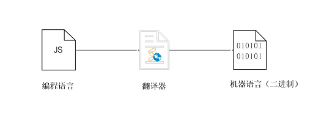1.5 编程语言和标记语言区别
- 编程语言有很强的逻辑和行为能力。在编程语言里, 你会看到很多 if else 、for 、while等具有逻辑性和行为能力的 指令，这是主动的。
- 标记语言（html）不用于向计算机发出指令，常用于格式化和链接。标记语言的存在是用来被读取的, 他是被动的
总结
- 计算机可以帮助人类解决某些问题
- 程序员利用编程语言编写程序发出指令控制计算机来实现这些任务
- 编程语言有机器语言、汇编语言、高级语言
- 高级语言需要一个翻译器转换为计算机识别的机器语言
- 编程语言是主动的有很强的逻辑性
目录介绍：
2. 计算机基础
2.1 计算机组成
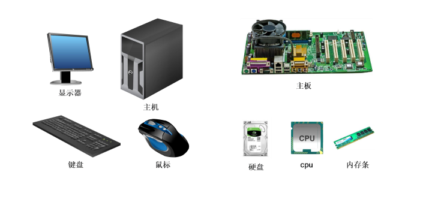2.2 数据存储
- 计算机内部使用二进制 0 和 1来表示数据
- 所有数据，包括文件、图片等最终都是以二进制数据（0 和 1）的形式存放在硬盘中的。
- 所有程序，包括操作系统，本质都是各种数据，也以二进制数据的形式存放在硬盘中。平时我们所说的安装软件，其实就是把程序文件复制到硬盘中。
- 硬盘、内存都是保存的二进制数据。
2.3 数据存储单位
bit < byte < kb < GB < TB<.....
- 位(bit)： 1bit 可以保存一个 0 或者 1 （最小的存储单位）
- 字节(Byte)：1B = 8b
- 千字节(KB)：1KB = 1024B
- 兆字节(MB)：1MB = 1024KB
- 吉字节(GB): 1GB = 1024MB
- 太字节(TB): 1TB = 1024GB
- ......
2.4 程序运行

- 1. 打开某个程序时，先从硬盘中把程序的代码加载到内存中
- 2. CPU执行内存中的代码
注意：之所以要内存的一个重要原因，是因为 cpu 运行太快了，如果只从硬盘中读数据，会浪费cpu性能，所以，才使用存取速度更快的内存来保存运行时的数据。（内存是电，硬盘是机械）
目录介绍：
1. 初识 JavaScript
1.1 JavaScript 是什么
- 布兰登·艾奇（Brendan Eich，1961年～）。
- 神奇的大哥用10天完成 JavaScript 设计
- 最初命名为 LiveScript，后来在与 Sun 合作之后将其改名为 JavaScript。
- JavaScript 是世界上最流行的语言之一，是一种运行在客户端的脚本语言 （Script 是脚本的意思）
- 脚本语言：不需要编译，运行过程中由 js 解释器( js 引擎）逐行来进行解释并执行
- 现在也可以基于 Node.js 技术进行服务器端编程
为了阅读方便，我们后面把JavaScript 简称为 JS。
1.2 JavaScript 的作用
- 表单动态校验（密码强度检测）（ JS 产生最初的目的 ）
- 网页特效
- 服务端开发(Node.js)
- 桌面程序(Electron)
- App(Cordova)
- 控制硬件-物联网(Ruff)
- 游戏开发(cocos2d-js)
1.3 HTML/CSS/JS 的关系
HTML/CSS 标记语言--描述类语言
- HTML 决定网页结构和内容( 决定看到什么 )，相当 于人的身体
- CSS 决定网页呈现给用户的模样( 决定好不好看 )， 相当于给人穿衣服、化妆
JS 脚本语言--编程类语言
- 实现业务逻辑和页面控制( 决定功能 )，相当于人的各种动作
1.4 浏览器执行 JS 简介
浏览器分成两部分：渲染引擎和 JS 引擎
- 渲染引擎：用来解析HTML与CSS，俗称内核，比如 chrome 浏览器的 blink ，老版本的 webkit
- JS 引擎：也称为 JS 解释器。 用来读取网页中的JavaScript代码，对其处理后运行，比如 chrome 浏览器的V8
浏览器本身并不会执行JS代码，而是通过内置 JavaScript 引擎(解释器) 来执行 JS 代码 。JS 引擎执行代码时逐行解释每一句源码（转换为机器语言），然后由计算机去执行，所以 JavaScript 语言归为脚本语言，会逐行解释执行。
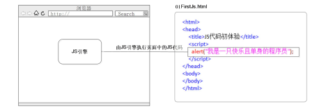1.5 JS 的组成
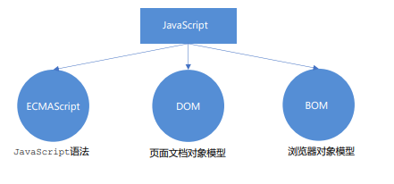1.5.1 ECMAScript
ECMAScript 是由ECMA 国际（ 原欧洲计算机制造商协会）进行标准化的一门编程语言，这种语言在万维网上应用广泛，它往往被称为 JavaScript 或 JScript，但实际上后两者是 ECMAScript 语言的实现和扩展。
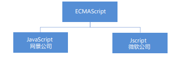ECMAScript：ECMAScript 规定了JS的编程语法和基础核心知识，是所有浏览器厂商共同遵守的一套JS语法工业标准。
更多参看MDN: : https://developer.mozilla.org/zh-CN/docs/Web/JavaScript/JavaScript_technologies_overview
1.5.2 DOM ——文档对象模型
文档对象模型 （Document Object Model，简称DOM），是W3C组织推荐的处理可扩展标记语言的标准编程接口。通过 DOM 提供的接口可以对页面上的各种元素进行操作（大小、位置、颜色等）。
1.5.3 BOM ——浏览器对象模型
BOM (Browser Object Model，简称BOM) 是指浏览器对象模型，它提供了独立于内容的、可以与浏览器窗口进行互动的对象结构。通过BOM可以操作浏览器窗口，比如弹出框、控制浏览器跳转、获取分辨率等。
1.6 JS 初体验
JS 有3种书写位置，分别为行内、内嵌和外部。
1.6.1 行内式 JS
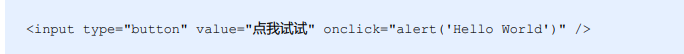
- 可以将单行或少量 JS 代码写在HTML标签的事件属性中（以 on 开头的属性），如：onclick
- 注意单双引号的使用：在HTML中我们推荐使用双引号,JS 中我们推荐使用单引号
- 可读性差， 在html中编写JS大量代码时，不方便阅读；
- 引号易错，引号多层嵌套匹配时，非常容易弄混；
- 特殊情况下使用
JS 有3种书写位置，分别为行内、内嵌和外部。
1.6.2 内嵌 JS

- 可以将多行JS代码写到script标签中
- 内嵌 JS 是学习时常用的方式
JS 有3种书写位置，分别为行内、内嵌和外部。
1.6.3 外部 JS文件
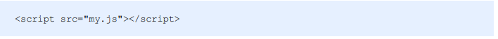- 利于HTML页面代码结构化，把大段 JS代码独立到 HTML 页面之外，既美观，也方便文件级别的复用
- 引用外部 JS文件的 script 标签中间不可以写代码
- 适合于JS 代码量比较大的情况
目录介绍：
2. JavaScript注释
2.1 单行注释
为了提高代码的可读性，JS与CSS一样，也提供了注释功能。JS中的注释主要有两种，分别是单行注释和多行注释。单行注释的注释方式如下：
// 我是一行文字，不想被 JS引擎 执行，所以 注释起来
// 用来注释单行文字（ 快捷键 ctrl + / ）
2.2 多行注释
多行注释的注释方式如下：
/* 获取用户年龄和姓名
并通过提示框显示出来 */
/* */ 用来注释多行文字（ 默认快捷键 alt + shift + a ）
快捷键修改为： ctrl + shift + /
vscode → 首选项按钮 → 键盘快捷方式 → 查找 原来的快捷键 → 修改为新的快捷键 → 回车确认
目录介绍：
3. JavaScript 输入输出语句
为了方便信息的输入输出，JS中提供了一些输入输出语句，其常用的语句如下：
| 方法 | 说明 | 归属 |
|---|---|---|
| alert(msg) | 浏览器弹出警示框 | 浏览器 |
| console.log(msg) | 浏览器控制台打印输出信息 | 浏览器 |
| prompt(info) | 浏览器弹出输入框，用户可以输入 | 浏览器 |
注意：alert() 主要用来显示消息给用户，console.log() 用来给程序员自己看运行时的消息。
目录介绍：
1. 变量概述
1.1 什么是变量
白话：变量就是一个装东西的盒子。
通俗：变量是用于存放数据的容器。 我们通过变量名 获取数据，甚至数据可以修改。
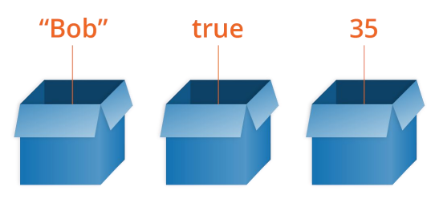1.2 变量在内存中的存储
本质：变量是程序在内存中申请的一块用来存放数据的空间。
类似我们酒店的房间，一个房间就可以看做是一个变量。
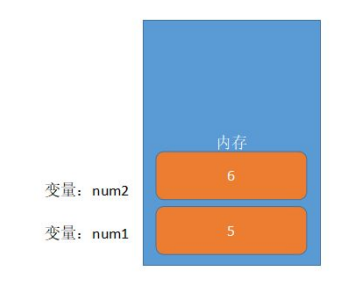目录介绍：
2. 变量的使用
变量在使用时分为两步： 1. 声明变量 2. 赋值
2.1 声明变量
// 声明变量
var age; // 声明一个 名称为age 的变量
- var 是一个 JS关键字，用来声明变量( variable 变量的意思 )。使用该关键字声明变量后，计算机会自动为变量分配内存空间，不需要程序员管
- age 是程序员定义的变量名，我们要通过变量名来访问内存中分配的空间
2.2 赋值
age = 10; // 给 age 这个变量赋值为 10
- = 用来把右边的值赋给左边的变量空间中 此处代表赋值的意思
- 变量值是程序员保存到变量空间里的值
2.3 变量的初始化
var age = 18; // 声明变量同时赋值为 18
声明一个变量并赋值， 我们称之为变量的初始化。 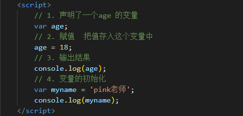
案例：变量的使用
有个叫卡卡西的人在旅店登记的时候前台让他填一张表，这张表里的内容要存到电脑上，表中的内容有：姓名、年龄、邮箱、家庭住址和工资，存储之后需要把这些信息显示出来，所显示的内容如下：
我叫旗木卡卡西，我住在火影村，我今年30岁了，我的邮箱是 kakaxi@itcast.cn，我的工资2000
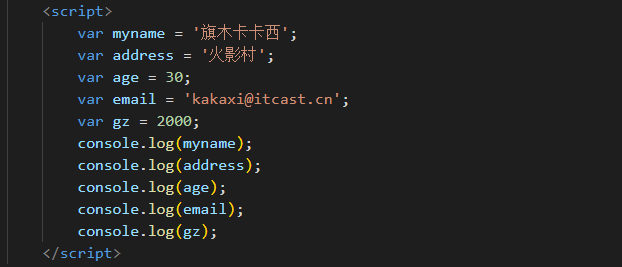案例：变量的使用
1. 弹出一个输入框，提示用户输入姓名
2. 弹出一个对话框，输出用户刚才输入的姓名。
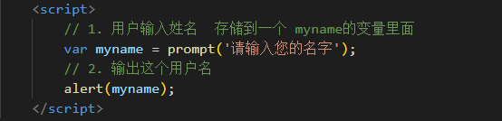目录介绍：
3. 变量语法扩展
3.1 更新变量
一个变量被重新复赋值后，它原有的值就会被覆盖，变量值将以最后一次赋的值为准。
var age = 18;
age = 81;//最后的结果就是81因为18被覆盖掉了
3.2 同时声明多个变量
同时声明多个变量时，只需要写一个 var， 多个变量名之间使用英文逗号隔开。
var age = 10, name = 'zs', sex = 2;
（扩展）区别 var a = 9, b = 9, c = 9; 和 var a = b = c = 9;
在13-预解析--预解析案例-案例4中里面有一种声明：var a = b = c = 9; 注意它并没有用英文逗号分开，
这个相当于是 var a = 9; b = 9; c = 9;
也就是说b 和 c 直接赋值，没有var声明，所以b 和c
当作全局变量来看。
而不是上面的集体声明 var a = 9, b = 9, c = 9;
3.3 声明变量特殊情况
| 情况 | 说明 | 结果 |
|---|---|---|
| var age ; console.log (age); | 只声明 不赋值 | undefined |
| console.log(age) | 不声明 不赋值 直接使用 | 报错 |
| age = 10; console.log (age); | 不声明 只赋值 | 10 |
目录介绍：
4. 变量命名规范
- 由字母(A-Za-z)、数字(0-9)、下划线(_)、美元符号( $ )组成，如：usrAge, num01, _name
- 严格区分大小写。var app; 和 var App; 是两个变量
- 不能 以数字开头。 18age 是错误的
- 不能 是关键字、保留字。例如：var、for、while
- 变量名必须有意义。 MMD BBD nl → age
- 遵守驼峰命名法。首字母小写，后面单词的首字母需要大写。 myFirstName
- 推荐翻译网站： 有道 爱词霸
目录介绍：
案例：课堂练习
要求：交换两个变量的值 ( 实现思路：使用一个 临时变量 用来做中间存储 )
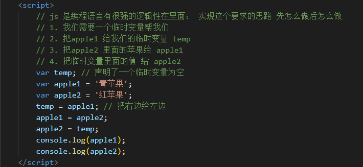小结
1，为什么需要变量？
因为我们一些数据需要保存，所以需要变量。
2，变量是什么？
变量就是一个容器，用来存放数据的。方便我们以后使用里面的数据。
3，变量的本质是什么?
变量是内存里的一块空间，用来存储数据。
4，变量怎么使用的？
我们使用变量的时候，一定要声明变量，然后赋值。
声明变量本质是去内存申请空间。
5，什么是变量的初始化？
声明变量并赋值我们称之为变量的初始化。
6，变量命名规范有哪些？
变量名尽量要规范，见名知意——驼峰命名法。
7，交换2个变量值的思路？
区分哪些变量名不合法 学会交换2个变量
目录介绍：
1. 数据类型简介
1.1 为什么需要数据类型
在计算机中，不同的数据所需占用的存储空间是不同的，为了便于把数据分成所需内存大小不同的数据，充分利用存储空间，于是定义了不同的数据类型。
简单来说，数据类型就是数据的类别型号。比如姓名“张三”，年龄18，这些数据的类型是不一样的
1.2 变量的数据类型
变量是用来存储值的所在处，它们有名字和数据类型。变量的数据类型决定了如何将代表这些值的位存储到计算机的内存中。JavaScript 是一种弱类型或者说动态语言。 这意味着不用提前声明变量的类型，在程序运行过程中，类型会被自动确定。
var age = 10; // 这是一个数字型
var areYouOk = '是的'; //这是一个字符串
在代码运行时，变量的数据类型是由 JS引擎 根据 = 右边变量值的数据类型来判断 的，运行完毕之后， 变量就确定了数据类型。JavaScript 拥有动态类型，同时也意味着相同的变量可用作不同的类型：
var x = 6; // x 为数字
var x = "Bill"; // x 为字符串
1.3 数据类型的分类
JS 把数据类型分为两类：
- 简单数据类型 （Number,String,Boolean,Undefined,Null）
- 复杂数据类型 （object）
目录介绍：
2. 简单数据类型
2.1 简单数据类型（基本数据类型）
JavaScript 中的简单数据类型及其说明如下：
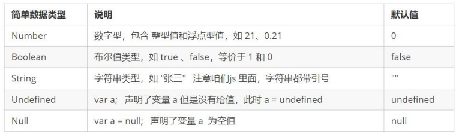2.2 数字型 Number
JavaScript 数字类型既可以用来保存整数值，也可以保存小数(浮点数）。
var age = 21; // 整数
var Age = 21.3747; // 小数
2.2.1 数字型进制
最常见的进制有二进制、八进制、十进制、十六进制。
// 1.八进制数字序列范围：0~7
var num1 = 07; // 对应十进制的7
var num2 = 019; // 对应十进制的19
var num3 = 08;//对应十进制的8
// 2.十六进制数字序列范围：0~9以及A~F
var num = 0xA;
现阶段我们只需要记住，在JS中八进制前面加0，十六进制前面加 0x
2.2.2 数字型范围
JavaScript中数值的最大和最小值
alert(Number.MAX_VALUE);// 1.7976931348623157e+308
alert(Number.MIN_VALUE); // 5e-324
- 最大值：Number.MAX_VALUE，这个值为： 1.7976931348623157e+308
- 最小值：Number.MIN_VALUE，这个值为：5e-32
2.2.3 数值型三个特殊值
alert(Infinity); // Infinity
alert(-Infinity); // -Infinity
alert(NaN); // NaN
- Infinity ，代表无穷大，大于任何数值
- -Infinity ，代表无穷小，小于任何数值
- NaN ，Not a number，代表一个非数值
2.2.4 isNaN()
用来判断一个变量是否为非数字的类型，返回 true 或者 false
var usrAge = 21;
var isOk = isNaN(userAge);
console.log(isNum); // false ，21 不是一个非数字
var usrName = "andy";
console.log(isNaN(userName)); // true ，"andy"是一个非数字
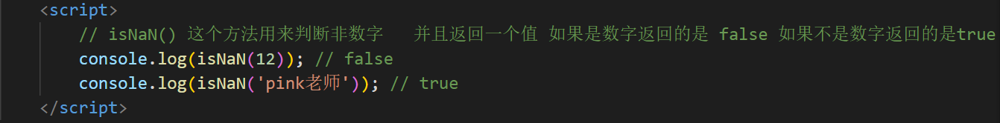
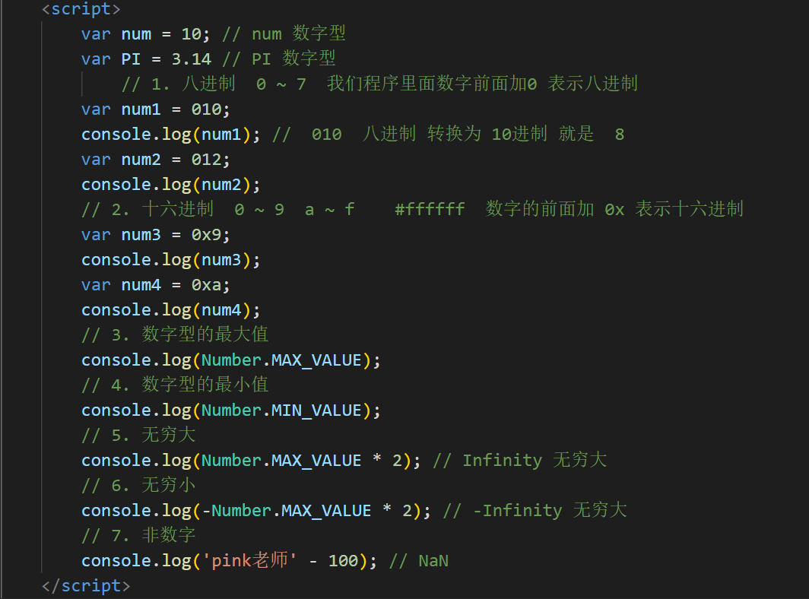
2.3 字符串型 String
字符串型可以是引号中的任意文本，其语法为 双引号"" 和单引号''
var strMsg = "我爱北京天安门~"; // 使用双引号表示字符串
var strMsg2 = '我爱吃猪蹄~'; // 使用单引号表示字符串
// 常见错误
var strMsg3 = 我爱大肘子; //
报错，没使用引号，会被认为是js代码，但js没有这些语法
因为 HTML 标签里面的属性使用的是双引号，JS 这里我们更推荐使用单引号。
2.3.1 字符串引号嵌套
JS 可以用单引号嵌套双引号，或者用双引号嵌套单引号 (外双内单，外单内双)
var strMsg = '我是"高帅富"程序猿'; // 可以用''包含""
var strMsg2 = "我是'高帅富'程序猿"; // 也可以用"" 包含''
// 常见错误
var badQuotes = 'What on earth?"; // 报错，不能 单双引号搭
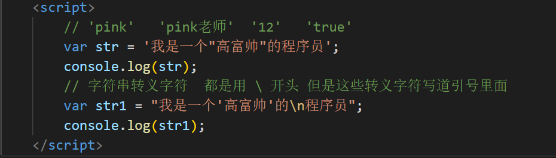
2.3.2 字符串转义符
类似HTML里面的特殊字符，字符串中也有特殊字符，我们称之为转义符。
转义符都是 \ 开头的，常用的转义符及其说明如下：
| 转义符 | 解释说明 |
|---|---|
| \n | 换行符，n 是 newline 的意思 |
| \ \ | 斜杠 \ |
| \' | ' 单引号 |
| \" | ”双引号 |
| \t | tab 缩进 |
| \b | 空格 ，b 是 blank 的 |
案例：弹出网页警示框
酷热难耐，火辣的太阳底下，我挺拔的身姿，成为了最为独特的风景。我审视四周，这里，是我的舞台，我就 是天地间的王者。这一刻，我豪气冲天，终于大喊一声："收破烂啦～"
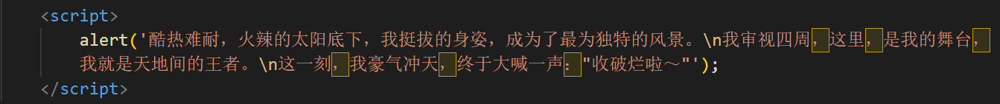2.2.3 字符串长度
字符串是由若干字符组成的，这些字符的数量就是字符串的长度。通过字符串的 length 属性可以获取整个字符串的长度
var strMsg = "我是帅气多金的程序猿！";
alert(strMsg.length); // 显示 11
2.3.4 字符串拼接
- 多个字符串之间可以使用 + 进行拼接，其拼接方式为字符串 + 任何类型 = 拼接之后的新字符串
- 拼接前会把与字符串相加的任何类型转成字符串，再拼接成一个新的字符串
//1.1 字符串 "相加"
alert('hello' + ' ' + 'world'); // hello world
//1.2 数值字符串 "相加"
alert('100' + '100'); // 100100
//1.3 数值字符串 + 数值
alert('11' + 12); // 1112
+ 号总结口诀：数值相加 ，字符相连
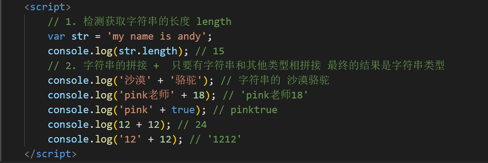2.3.5 字符串拼接加强
console.log('pink老师' + 18); // 只要有字符就会相连
var age = 18;
// console.log('pink老师age岁啦'); // 这样不行哦
console.log('pink老师' + age); // pink老师18
console.log('pink老师' + age + '岁啦'); // pink老师18岁啦
- 我们经常会将字符串和变量来拼接，因为变量可以很方便地修改里面的值
- 变量是不能添加引号的，因为加引号的变量会变成字符串
- 如果变量两侧都有字符串拼接，口诀“引引加加”，删掉数字，变量写加中间
案例：显示年龄
弹出一个输入框，需要用户输入年龄，之后弹出一个警示框显示“您今年 xx 岁啦”（xx 表示刚才输
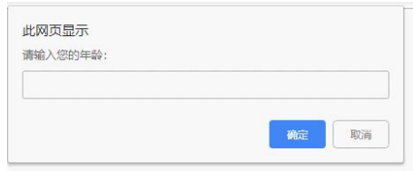案例分析
这是利用 JS 编写的一个非常简单的交互效果程
交互编程的三个基本要素：
1. 你喜欢我吗？→ 这是用户输入
2. 女孩想了想 → 这是 程序内部处理
3. 女孩回答：“我也喜欢你。” → 这是输出结果
那么在程序中要如何实现呢？
① 弹出一个输入框（prompt)，让用户输入年龄（用户输入）
②把用户输入的值用变量保存起来,把刚才输入的年龄与所要输出的字符串拼接
（程序内部处理）
③ 使用alert语句弹出警示框（输出结果）
案例代码
// 弹出一个输入框（prompt)，让用户输入年龄（用户输入）
//把用户输入的值用变量保存起来,把刚才输入的年龄与所要输出的字符串拼接（程序内部处理）
// 使用alert语句弹出警示框（输出结果）
var age = prompt('请输入您的年龄');
var str = '您今年已经' + age + '岁了';
alert(str);
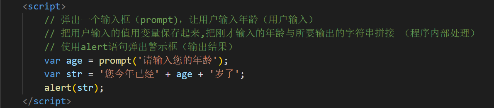
2.4 布尔型 Boolean
布尔类型有两个值：true 和 false ，其中 true 表示真（对），而 fals
布尔型和数字型相加的时候， true 的值为 1 ，false 的值为 0。
console.log(true + 1); // 2
console.log(false + 1); // 1
2.5 Undefined 和 Null
一个声明后没有被赋值的变量会有一个默认值 undefined ( 如果进行相连或者相加时，注意结果）
var variable;
console.log(variable); // undefined
console.log('你好' + variable); // 你好undefined
console.log(11 + variable); // NaN
console.log(true + variable); // NaN
一个声明变量给 null 值，里面存的值为空（学习对象时，我们继续研究null)
var vari = null;
console.log('你好' + vari); // 你好null
console.log(11 + vari); // 11
console.log(true + vari); // 1
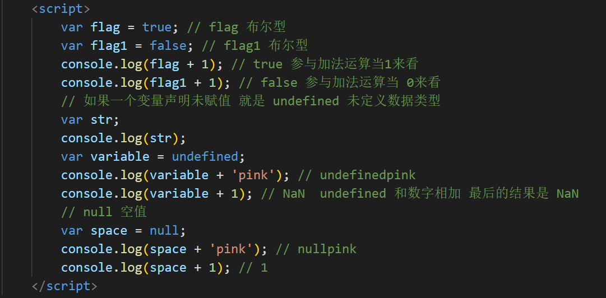
目录介绍：
3. 获取变量数据类型
3.1 获取检测变量的数据类型
typeof 可用来获取检测变量的数据类型
var num = 18;
console.log(typeof num) // 结果 number
不同类型的返回值
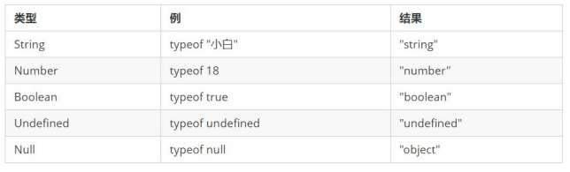3.2 字面量
字面量是在源代码中一个固定值的表示法，通俗来说，就是字面量表示如何表达这个值。
- 数字字面量：8, 9, 10
- 字符串字面量：'黑马程序员', "大前端"
- 布尔字面量：true，false
目录介绍：
4. 数据类型转换
4.1 什么是数据类型转换
使用表单、prompt 获取过来的数据默认是字符串类型的，此时就不能直接简单的进行加法运算，而需要转换变 量的数据类型。通俗来说，就是把一种数据类型的变量转换成另外一种数据类型
我们通常会实现3种方式的转换：
- 转换为字符串类型
- 转换为数字型
- 转换为布尔型
4.2 转换为字符串
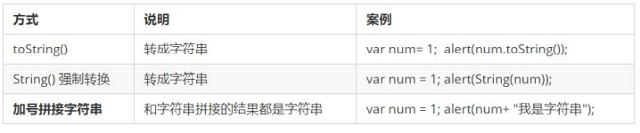 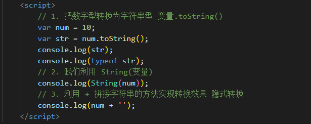- toString() 和 String() 使用方式不一样
- 三种转换方式，我们更喜欢用第三种加号拼接字符串转换方式， 这一种方式也称之为隐式转换
4.3 转换为数字型（重点）
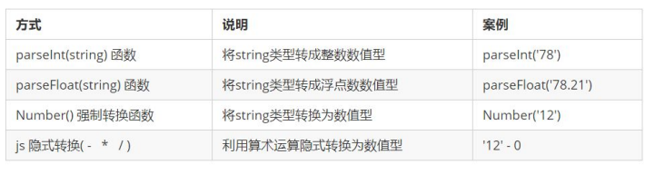 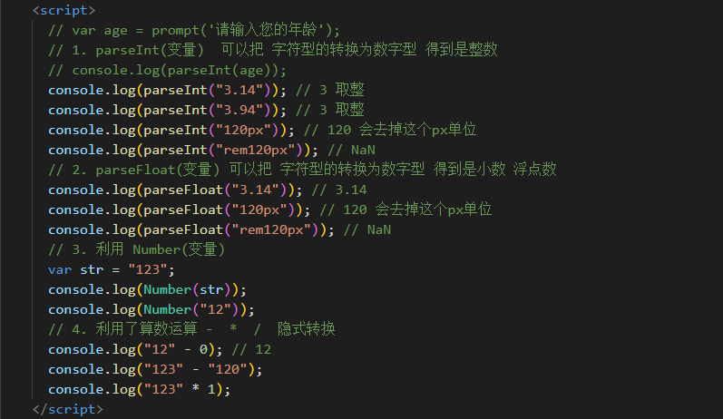- 注意 parseInt 和 parseFloat 单词的大小写，这2个是重点
- 隐式转换是我们在进行算数运算的时候，JS 自动转换了数据类型
案例 1：计算年龄
此案例要求在页面中弹出一个输入框，我们输入出生年份后， 能计算出我们的年龄
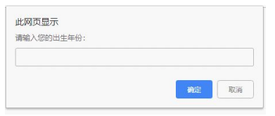案例分析
① 弹出一个输入框（prompt)，让用户输入出生年份 （用户输入）
②把用户输入的值用变量保存起来，然后用今年的年份减去变量值，结果就是现在的年龄
（程序内部处理）
③ 弹出警示框（alert) ， 把计算的结果输出 （输出结果）
案例代码
// 1. 弹出输入框，输入出生年份，并存储在变量中
var year = prompt('请输入您的出生年份：'); // 用户输入
// 2. 用今年减去刚才输入的年份
var result = 2019 - year; // 程序内部处理
// 3. 弹出提示框
alert('您的年龄是:' + result + '岁'); // 输出结果
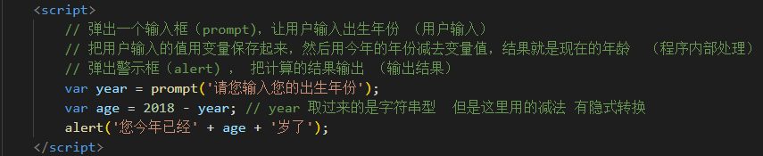
案例 2：简单加法
计算两个数的值， 用户输入第一个值后，继续弹出第二个输入框并输入第二个值，最后通过弹出窗口显示出两次输入值相加的结果。
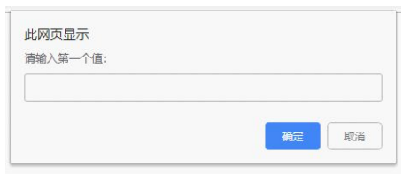案例分析
① 先弹出第一个输入框，提示用户输入第一个值 保存起来
② 再弹出第二个框，提示用户输入第二个值 保存起来
③ 把这两个值相加，并将结果赋给新的变量（注意数据类型转换）
④ 弹出警示框（alert) ， 把计算的结果输出 （输出结果
）
案例代码
// 1. 先弹出第一个输入框，提示用户输入第一个值
var num1 = prompt('请输入第一个值：');
// 2. 再弹出第二个框，提示用户输入第二个值
var num2 = prompt('请输入第二个值：');
// 3. 将输入的值转换为数字型后，把这两个值相加，并将结果赋给新的变量
var result = parseFloat(num1) + parseFloat(num2);
// 4. 弹出结果 alert('结果是:' + result);
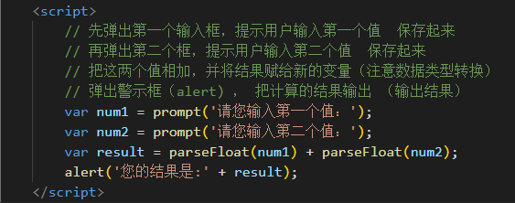
4.4 转换为布尔型
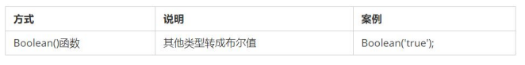- 代表空、否定的值会被转换为 false ，如 ''、0、NaN、null、undefine
- 其余值都会被转换为 true
console.log(Boolean('')); // false
console.log(Boolean(0)); // false
console.log(Boolean(NaN)); // false
console.log(Boolean(null)); // false
console.log(Boolean(undefined)); // false
console.log(Boolean('小白')); // true
console.log(Boolean(12)); // true
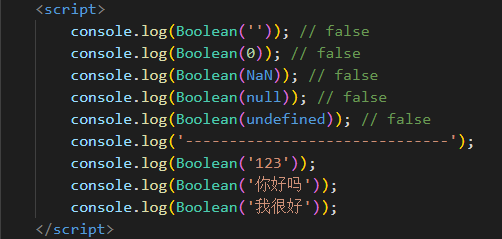
目录介绍：
1. 解释型语言和编译型语言
1.1 概述
计算机不能直接理解任何除机器语言以外的语言，所以必须要把程序员所写的程序语言翻译成机器语言才能执行程序。程序语言翻译成机器语言的工具，被称为翻译器。
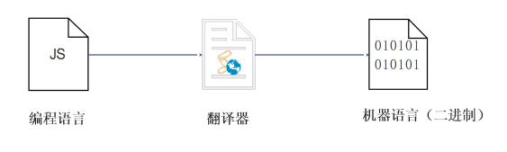- 翻译器翻译的方式有两种：一个是编译，另外一个是解释。两种方式之间的区别在于翻译的时间点不同
- 编译器是在代码执行之前进行编译，生成中间代码文件
- 解释器是在运行时进行及时解释，并立即执行(当编译器以解释方式运行的时候，也称之为解释器)
2.2 执行过程
类似于请客吃饭：
- 编译语言：首先把所有菜做好，才能上桌吃饭
- 解释语言：好比吃火锅，边吃边涮，同时进行
目录介绍：
2. 标识符、关键字、保留字
2.1 标识符
标识(zhi)符：就是指开发人员为变量、属性、函数、参数取的名字。
标识符不能是关键字或保留字。
2.3 关键字
关键字：是指 JS本身已经使用了的字，不能再用它们充当变量名、方法名。
包括：break、case、catch、continue、default、delete、do、else、finally、for、function、if、in、instanceof、new、return、switch、this、throw、try、typeof、var、void、while、with 等。
2.3 保留字
保留字：实际上就是预留的“关键字”，意思是现在虽然还不是关键字，但是未来可能会成为关键字，同样不能使用它们当变量名或方法名。
包括：boolean、byte、char、class、const、debugger、double、enum、export、extends、fimal、float、goto、implements、import、int、interface、long、mative、package、private、protected、public、short、static、super、synchronized、throws、transient、volatile 等。
注意：如果将保留字用作变量名或函数名，那么除非将来的浏览器实现了该保留字，否则很可能收不到任何错误消息。当浏览器将其实现后，该单词将被看做关键字，如此将出现关键字错误。
目录介绍：
3. 课后作业
1. 给同桌讲讲交换两个变量的值 算法（不管他愿不愿听）
2. 依次询问并获取用户的姓名、年龄、性别，并打印用户信息如图
自己写的：
var name = prompt("请输入你的姓名");
var age = prompt("请输入你的年龄");
var sex = prompt("请输入你的性别");
var resul = "你的姓名是:" + name + "\n你的年龄是:" + age + "岁" +
"\n你的性别是:" + sex;
alert(resul);
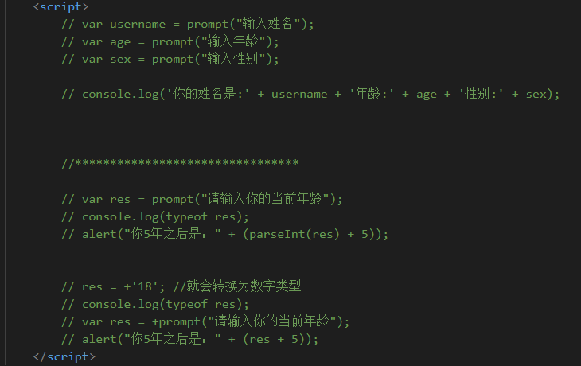
目录介绍：
1. 运算符
运算符（operator）也被称为操作符，是用于实现赋值、比较和执行算数运算等功能的符号。
JavaScript中常用的运算符有：
- 算数运算符
- 递增和递减运算符
- 比较运算符
- 逻辑运算符
- 赋值运算符
目录介绍：
2. 算数运算符
2.1 算术运算符概述
概念：算术运算使用的符号，用于执行两个变量或值的算术运算。

2.2 浮点数的精度问题
浮点数值的最高精度是 17 位小数，但在进行算术计算时其精确度远远不如整数。
var result = 0.1 + 0.2; // 结果不是
0.3，而是：0.30000000000000004
>console.log(0.07 * 100); // 结果不是 7， 而是：7.000000000000001
所以：不要直接判断两个浮点数是否相等!
（问题在于计算机将小数转换成二进制的数，这个二进制的数是个约数！)

2.3 课堂提问
1. 我们怎么判断 一个数能够被整除呢？
它的余数是0 就说明这个数能被整除， 这就是 % 取余运算符的主要用途
2. 请问 1 + 2 * 3 结果是？
结果是7 ，注意算术运算符优先级的，先乘除，后加减，有小括号先算小括号里面的
2.4 表达式和返回值
表达式：是由数字、运算符、变量等以能求得数值的有意义排列方法所得的组合
简单理解：是由数字、运算符、变量等组成的式子
表达式最终都会有一个结果，返回给我们，我们成为返回值

目录介绍：
3. 递增和递减运算符
3.1 递增和递减运算符概述
如果需要反复给数字变量添加或减去1，可以使用递增（++）和递减（ -- ）运算符来完成。
在 JavaScript 中，递增（++）和递减（ -- ）既可以放在变量前面，也可以放在变量后面。放在变量前面时，我们可以称为前置递增（递减）运算符，放在变量后面时，我们可以称为后置递增（递减）运算符。
注意: 递增和递减运算符必须和变量配合使用。
3.2 递增运算符
3.2.1 前置递增运算符
++num 前置递增，就是自加1，类似于 num = num + 1，但是 ++num 写起来更简单。
使用口诀：先自加，后返回值
var num = 10;
alert(++num + 10); // 21
3.2.2 后置递增运算符
num++ 后置递增，就是自加1，类似于 num = num + 1 ，但是 num++ 写起来更简单。
使用口诀：先返回原值，后自加
var num = 10;
alert(10 + num++); // 20
3.3 前置递增和后置递增小结
- 前置递增和后置递增运算符可以简化代码的编写，让变量的值 + 1 比以前写法更简单
- 单独使用时，运行结果相同
- 与其他代码联用时，执行结果会不同
- 后置：先原值运算，后自加（先人后己）
- 前置：先自加，后运算（先已后人）
- 开发时，大多使用后置递增/减，并且代码独占一行，例如：num++; 或者 num--;

目录介绍：
4. 比较运算符
4.1 比较运算符概述
概念：比较运算符（关系运算符是两个数据进行比较时所使用的运算符 ，比较运算后，会返回一个布尔值（true / false）作为比较运算的结果

4.2 =小结

console.log(18 == '18');
console.log(18 === '18');

目录介绍：
5. 逻辑运算符
5.1 逻辑运算符概述
概念：逻辑运算符是用来进行布尔值运算的运算符，其返回值也是布尔值。后面开发中经常用于多个条件的判断

5.2 逻辑与&&
两边都是 true才返回 true，否则返回 false

5.3 逻辑或 ||
两边都为 false 才返回 false，否则都为true

5.3 逻辑非 ！
逻辑非（!也叫作取反符，用来取一个布尔值相反的值，如 true 的相反值是 false
var isOk = !true;
console.log(isOk); // false
5.4 短路运算（逻辑中断）
短路运算的原理：当有多个表达式（值）时,左边的表达式值可以确定结果时,就不再继续运算右边的表达式的值;
5.4.1 逻辑与
- 语法：表达式1 && 表达式2
- 如果第一个表达式的值为真，则返回表达式2
- 如果第一个表达式的值为假，则返回表达式1
console.log( 123 && 456 ); // 456
console.log( 0 && 456 ); // 0
console.log( 123 && 456&& 789 ); // 789
(谈一下自己的理解：逻辑与&&本质上就是为了"找假"，一旦找到了“假”，就直接选择”假“，如果找不到“假”，就取最后一个值，最后一个值也就是“真”。)
5.4.1 逻辑或
- 语法：表达式1 || 表达式2
- 如果第一个表达式的值为真，则返回表达式1
- 如果第一个表达式的值为假，则返回表达式2
console.log( 123 || 456 ); // 123
console.log( 0 || 456 ); // 456
console.log( 123 || 456 || 789 ); // 123
(谈一下自己的理解：逻辑或||本质上就是为了"找真"，一旦找到了“真”，就直接选择”真“，如果找不到“真”，就取最后一个值，最后一个值也就是“假”。)

目录介绍：
6. 赋值运算符
概念：用来把数据赋值给变量的运算符。

var age = 10;
age += 5; // 相当于 age = age + 5;
age -= 5; // 相当于 age = age - 5;
age *= 10; // 相当于 age = age * 10;
目录介绍：
7. 运算符优先级

- 一元运算符里面的逻辑非优先级很高
- 逻辑与比逻辑或优先级高
目录介绍：
1. 流程控制
在一个程序执行的过程中，各条代码的执行顺序对程序的结果是有直接影响的。很多时候我们要通过控制代码的执行顺序来实现我们要完成的功能。
简单理解： 流程控制就是来控制我们的代码按照什么结构顺序来执行
流程控制主要有三种结构，分别是 顺序结构、分支结构和循环结构，这三种结构代表三种代码执行的顺序
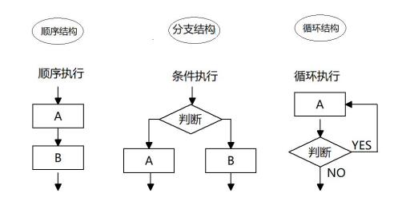目录介绍：
2. 顺序流程控制
顺序结构是程序中最简单、最基本的流程控制，它没有特定的语法结构，程序会按照代码的先后顺序，依次执行，程序中大多数的代码都是这样执行的。
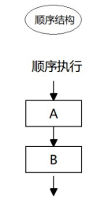目录介绍：
3. 分支流程控制 if 语句
3.1 分支结构

JS 语言提供了两种分支结构语句
- if 语句
- switch 语句
3.2 if 语句
3.2.1 语法结构
// 条件成立执行代码，否则什么也不做
if (条件表达式) {
// 条件成立执行的代码语句
}
语句可以理解为一个行为，循环语句和分支语句就是典型的语句。一个程序由很多个语句组成，一般情况下，会分割成一个一个的语句。
3.2.2 执行流程

案例： 进入网吧
弹出一个输入框，要求用户输入年龄，如果年龄大于等于 18 岁，允许进网吧
案例分析
① 弹出 prompt 输入框，用户输入年龄， 程序把这个值取过来保存到变量中
② 使用 if 语句来判断年龄，如果年龄大于18 就执行 if
大括号里面的输出语句
实现代码
var usrAge = prompt('请输入您的年龄：');
if(usrAge >= 18){
alert('您的年龄合法，欢迎来天际网吧享受学习的乐趣！');
}
3.3 if else语句（双分支语句）
3.3.1 语法结构
// 条件成立 执行 if 里面代码，否则执行else 里面的代码
if (条件表达式) {
// [如果] 条件成立执行的代码
} else {
// [否则] 执行的代码
}
3.3 if else语句（双分支语句）
3.3.2 执行流程

案例 2：判断闰年
接收用户输入的年份，如果是闰年就弹出闰年，否则弹出是平年

案例分析
① 算法：能被4整除且不能整除100的为闰年（如2004年就是闰年，1901年不是闰年）或者能够被400 整除的就是闰年
② 弹出prompt 输入框，让用户输入年份，把这个值取过来保存到变量中
③ 使用 if 语句来判断是否是闰年，如果是闰年，就执行 if
大括号里面的输出语句，否则就执行else 里面的输出语句
④ 一定要注意里面的且 && 还有或者 ||
的写法，同时注意判断整除的方法是取余为 0
实现代码
if (year % 4 == 0 && year % 100 != 0 || year % 400 == 0) {
alert("这个年份是闰年");
} else { // 剩下的是平年
alert("这个年份是平年");
}
独立完成案例： 判断是否中奖
接收用户输入的姓名，来判断是否中奖， 如果输入的是刘德华，则提示中了5块钱， 否则提示没有中奖。
案例分析
① 弹出 prompt 输入框，让用户输入姓名，把这个值取过来保存到变量中
② 使用 if 语句来判断是否存在这个姓名，如果存在，就执行 if
大括号里面的输出语句，否则就执行 else 里面的输出语句
③ 一定要注意判断是否相等，用 == 或者 ===
实现代码
// 算法 如果你叫刘德华 恭喜您中奖了，否则没有中奖
// 获得用户名
var username = prompt("请输入您的姓名：");
if( username == "刘德华")
{ alert("恭喜发财");
} else {
alert("谢谢惠顾,欢迎下次再来");
}
3.4 if else if 语句(多分支语句)
3.4.1 语法结构
// 适合于检查多重条件。
if (条件表达式1) {
语句1；
} else if (条件表达式2) {
语句2；
} else if (条件表达式3) {
语句3；
....
} else {
// 上述条件都不成立执行此处代码
}
3.4.2 执行流程

案例： 判断成绩级别
要求：接收用户输入的分数，根据分数输出对应的等级字母
A、B、C、D、E。
其中：
1. 90分(含)以上 ，输出：A
2. 80分(含)~ 90 分(不含)，输出：B
3. 70分(含)~ 80 分(不含)，输出：C
4. 60分(含)~ 70 分(不含)，输出：D
5. 60分(不含) 以下，输出： E
案例分析
① 按照从大到小判断的思路
② 弹出prompt输入框，让用户输入分数，把这个值取过来保存到变量中
③ 使用多分支 if else if 语句来分别判断输出不同的值
实现代码
var score = prompt('请您输入分数:');
if (score >= 90) {
alert('宝贝，你是我的骄傲');
} else if (score >= 80) {
alert('宝贝，你已经很出色了');
} else if (score >= 70) {
alert('你要继续加油喽');
} else if (score >= 60) {
alert('孩子，你很危险');
} else {
alert('熊孩子，我不想和你说话，我只想用鞭子和你说话');
目录介绍：
4. 三元表达式
三元表达式也能做一些简单的条件选择。 有三元运算符组成的式子称为三元表达式
4.1 语法结构
表达式1 ? 表达式2:
表达式3;
4.2 执行思路
- 如果表达式1为 true ，则返回表达式2的值，如果表达式1为 false，则返回表达式3的值
- 简单理解： 就类似于 if else （双分支） 的简写
案例： 数字补0
用户输入数字，如果数字小于10，则在前面补 0 ，比如01，09 ，如果数字大于10，则不需要补，比如20。
案例分析
① 用户输入0~59之间的一个数字
② 如果数字小于10，则在这个数字前面补0,（加0） 否则 不做操作
③ 用一个变量接受这个返回值，输出
实现代码
var time = prompt('请您输入一个 0 ~ 59 之间的一个数字');
// 三元表达式 表达式 ？ 表达式1 ：表达式2
var result = time < 10 ? '0' + time : time;
//把返回值赋值给一个变量
alert(result);
目录介绍：
5. 分支流程控制 switch 语句
5.1 语法结构
switch 语句也是多分支语句，它用于基于不同的条件来执行不同的代码。当要针对变量设置一系列的特定值的选项时，就可以使用 switch。
switch( 表达式 ){
case value1:
// 表达式 等于 value1 时要执行的代码
break;
case value2:
// 表达式 等于 value2 时要执行的代码
break;
default:
// 表达式 不等于任何一个 value 时要执行的代码
}
5.1 语法结构
- switch ：开关 转换 ， case ：小例子 选项
- 关键字 switch 后面括号内可以是表达式或值， 通常是一个变量
- 关键字 case , 后跟一个选项的表达式或值，后面跟一个冒号
- switch 表达式的值会与结构中的 case 的值做比较
- 如果存在匹配全等(===) ，则与该 case 关联的代码块会被执行，并在遇到 break 时停止，整个switch 语句代码执行结束
- 如果所有的 case 的值都和表达式的值不匹配，则执行 default 里的代码
注意：执行case 里面的语句时，如果没有break，则继续执行下一个case里面的语句。
案例: 查询水果
用户在弹出框里面输入一个水果，如果有就弹出该水果的价格， 如果没有该水果就弹出“没有此水果”。

案例分析
① 弹出 prompt
输入框，让用户输入水果名称，把这个值取过来保存到变量中。
② 将这个变量作为 switch 括号里面的表达式。
③ case 后面的值写几个不同的水果名称，注意一定要加引号
，因为必须是全等匹配。
④ 弹出不同价格即可。同样注意每个 case 之后加上 break ，以便退出
switch 语句。
⑤ 将 default 设置为没有此水果。
实现代码
var fruit = prompt('请您输入查询的水果:');
switch (fruit) {
case '苹果'
: alert('苹果的价格是 3.5/斤');
break;
case '榴莲':
alert('榴莲的价格是 35/斤');
break;
default:
alert('没有此水果');
}
5.2 switch 语句和 if else if 语句的区别
① 一般情况下，它们两个语句可以相互替换
② switch...case 语句通常处理 case为比较确定值的情况， 而
if…else…语句更加灵活，常用于范围判断(大于、等于某个范围)
③
switch语句进行条件判断后直接执行到程序的条件语句，效率更高。而if…else语句有几种条件，就得判断多少次。
④ 当分支比较少时，if… else语句的执行效率比 switch语句高。
⑤ 当分支比较多时，switch语句的执行效率比较高，而且结构更清晰。
目录介绍：
6. 课后作业
① 1. 判断时间阶段。 比如 用户输入12点 弹出 中午好 用户输入 18点 弹出傍晚好 用户输入 23点 弹出深夜好
参考答案：
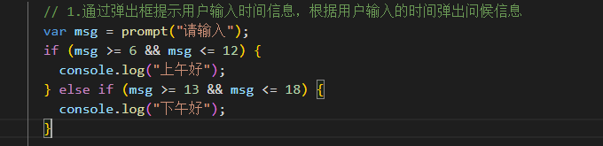② 2. 比较两个数的最大值 （用户依次输入2个值，最后弹出最大的那个值）
参考答案：

（扩展）2.2 比较三个数的最大值
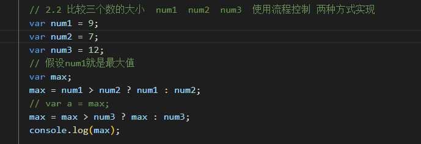③ 3. 用户输入一个数，来判断是奇数还是偶数
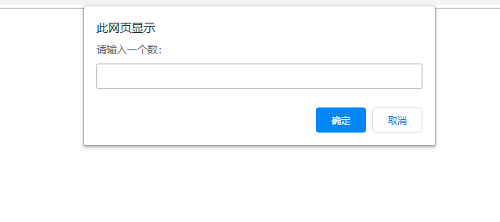参考答案：
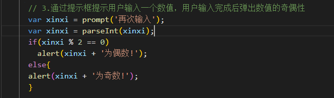④ 4. 根据用户输入的数值（数字1 到 数字 7），返回星期几

参考答案：
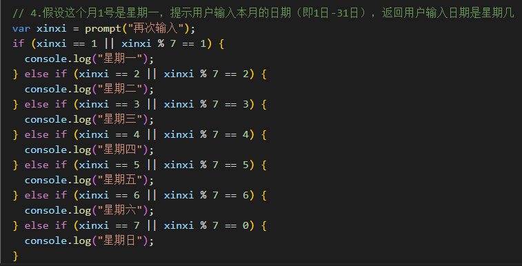⑤ 5. 接收班长口袋里的钱数？若大于等于2000，请大家吃西餐。若小于2000，大于等于1500，请大家吃快餐。若小于1500，大于等于1000，请大家喝饮料。若小于1000，大于等于500，请大家吃棒棒糖。否则提醒班长下次把钱带够
自己思考的答案：
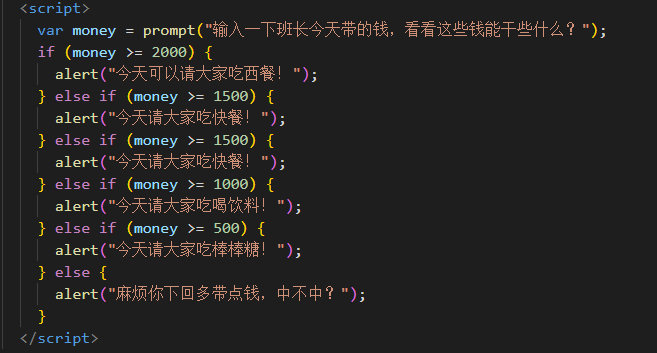⑥ 6. 分数转换,给一个分数，判定等级。大于等于90 A，大于等于80小于90 B，大于等于70小于80 C ，大于等于60小于70 D，小于60 E
自己思考的答案：
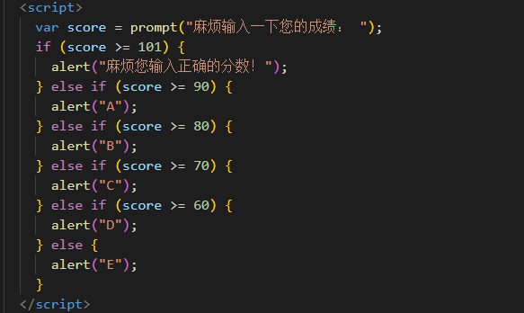⑦ 7. 预习下 循环控制 for 循环
目录介绍：
1. 循环
1.1 循环目的
- 在实际问题中，有许多具有规律性的重复操作，因此在程序中要完成这类操作就需要重复执行某些语句
JS 中的循环
在Js 中，主要有三种类型的循环语句：
- for 循环
- while 循环
- do...while 循环
目录介绍：
2. for 循环
在程序中，一组被重复执行的语句被称之为 循环体，能否继续重复执行，取决于循环的 终止条件。由循环体及循环的终止条件组成的语句，被称之为 循环语句
2.1 语法结构
for 循环主要用于把某些代码循环若干次，通常跟计数有关系。其语法结构如下：
for(初始化变量; 条件表达式; 操作表达式 ){
//循环体语句
}
- 初始化变量：通常被用于初始化一个计数器，该表达式可以使用 var 关键字声明新的变量，这个变量帮我们来记录次数。
- 条件表达式：用于确定每一次循环是否能被执行。如果结果是 true 就继续循环，否则退出循环。
- 操作表达式：每次循环的最后都要执行的表达式。通常被用于更新或者递增计数器变量。当然，递减变量也是可以的。
代码体验:我们重复打印100句你好。
for (var i = 1; i <= 100; i++) {
console.log('你好吗');
}
执行过程：
- 初始化变量，初始化操作在整个 for 循环只会执行一次。
- 执行条件表达式，如果为true，则执行循环体语句，否则退出循环，循环结束。
- 执行操作表达式，此时第一轮结束。
- 第二轮开始，直接去执行条件表达式（不再初始化变量），如果为 true ，则去执行循环体语句，否则退出循环。
- 继续执行操作表达式，第二轮结束。
- 后续跟第二轮一致，直至条件表达式为假，结束整个 for 循环。
断点调试：
断点调试是指自己在程序的某一行设置一个断点，调试时，程序运行到这一行就会停住，然后你可以一步一步往下调试，调试过程中可以看各个变量当前的值，出错的话，调试到出错的代码行即显示错误，停下。
断点调试可以帮我们观察程序的运行过程
浏览器中按 F12--> sources -->找到需要调试的文件-->在程序的某一行设置断点
Watch: 监视，通过watch可以监视变量的值的变化，非常的常用。
F11: 程序单步执行，让程序一行一行的执行，这个时候，观察watch中变量的值的变化。
代码调试的能力非常重要，只有学会了代码调试，才能学会自己解决bug的能力。初学者不要觉得调试代码麻烦就不去调试，知识点花点功夫肯定学的会，但是代码调试这个东西，自己不去练，永远都学不会。
今天学的代码调试非常的简单，只要求同学们记住代码调试的这几个按钮的作用即可，后面还会学到很多的代码调试技巧。
2.2 for 循环重复相同的代码
for循环可以重复相同的代码 ，比如我们要输出10句“媳妇我错了”
// 基本写法
for(var i = 1; i <= 10; i++){
console.log('媳妇我错了~');
}
// 用户输入次数
var num = prompt('请输入次数:')；
for ( var i = 1 ; i <= num; i++) {
console.log('媳妇我错了~');
}
2.3 for 循环重复不相同的代码
for 循环还可以重复不同的代码，这主要是因为使用了计数器 ，计数器在每次循环过程中都会有变化。例如，求输出一个人1到100岁：
// 基本写法 for (var i = 1; i <= 100; i++) {
console.log('这个人今年' + i + '岁了');
}
2.3 for 循环重复不相同的代码
for 循环还可以重复不同的代码，这主要是因为使用了计数器 ，计数器在每次循环过程中都会有变化。例如，求输出一个人1到100岁：
// for 里面是可以添加其他语句的
for (var i = 1; i <= 100; i++) {
if (i == 1) {
console.log('这个人今年1岁了， 它出生了');
} else if (i == 100) {
console.log('这个人今年100岁了，它死了');
} else {
console.log('这个人今年' + i + '岁了');
}
}
2.4 for 循环重复某些相同操作
for 循环因为有了计数器的存在，我们还可以重复的执行某些操作，比如做一些算术运算。
课堂案例1： 求1-100之间所有整数的累加和
案例分析：
① 需要循环100次，我们需要一个计数器 i
② 我们需要一个存储结果的变量
sum ，但是初始值一定是 0
③ 核心算法：1 + 2 + 3 + 4 .... ，sum = sum + i;
实现代码：
var sum = 0;
for(var i = 1;i <= 100; i++){
sumNum += i;
} console.log('1-100之间整数的和 = ' + sum);
课堂练习
① 求1-100之间所有数的平均值
② 求1-100之间所有偶数和奇数的和
③ 求1-100之间所有能被3整除的数字的和
课堂案例 2： 求学生成绩
要求用户输入班级人数，之后依次输入每个学生的成绩，最后打印出该班级总的成绩以及平均成绩。
案例分析
① 弹出输入框输入总的班级人数 ( num )
② 依次输入学生的成绩（保存起来 score），此时我们需要用到 for 循环，弹出的次数跟班级总人数有关系
条件表达式 i <= num
③ 进行业务处理: 计算成绩。
先求总成绩（sum），之后求平均成绩（average）
④ 弹出结果
实现代码
var num = prompt('请输入班级总的人数:'); // num 班级总的人数
var sum = 0; // 总成绩
var average = 0; // 平均成绩
for (var i = 1; i <= num; i++) {
var score = prompt('请输入第' + i + '个学生的成绩');
sum = sum + parseFloat(score);
}
average = sum / num;
alert('班级总的成绩是：' + sum);
alert('班级总的平均成绩是：' + average);
一行打印五个星星
我们采取追加字符串的方式，这样可以打印到控制台上。
var star = '';
for (var i = 1; i <= 5; i++) {
star += '☆'
}
console.log(star);
目录介绍：
3. 双重 for 循环
3.1 双重 for 循环概述
很多情况下，单层 for 循环并不能满足我们的需求，比如我们要打印一个 5 行 5 列的图形、打印一个倒直角三角形等，此时就可以通过循环嵌套来实现。
循环嵌套是指在一个循环语句中再定义一个循环语句的语法结构，例如在for循环语句中，可以再嵌套一个for 循环，这样的 for 循环语句我们称之为双重for循环。
3.2 双重 for 循环语法
for (外循环的初始; 外循环的条件; 外循环的操作表达式) {
for (内循环的初始; 内循环的条件; 内循环的操作表达式) {
需执行的代码;
}
}
- 内层循环可以看做外层循环的语句
- 内层循环执行的顺序也要遵循 for 循环的执行顺序
- 外层循环执行一次，内层循环要执行全部次数
3.4 打印五行五列星星
核心：
1. 内层循环负责一行打印五个星星
2. 外层循环负责打印五行
var star = '';
for (var j = 1; j <= 3; j++) {
for (var i = 1; i <= 3; i++) {
star += '☆'
}
// 每次满 5个星星 就 加一次换行
star += '\n'
}
console.log(star);
课堂案例 1： 打印 n 行 n 列的星星
要求用户输入行数和列数，之后在控制台打印出用户输入行数和列数的星星。
实现代码
var row = prompt('请输入您打印几行星星:');
var col = prompt('请输入您打印几列星星:');
var str = '';
for (var i = 1; i <= row; i++) {
for (j = 1; j <= col; j++) {
str += '☆';
}
str += '\n';
}
console.log(str);
课堂案例 2：打印倒三角形
案例分析
① 一共有10行，但是每行的星星个数不一样，因此需要用到双重 for 循环
② 外层的 for 控制行数 i ，循环10次可以打印10行
③ 内层的 for 控制每行的星星个数 j
④ 核心算法： 每一行星星的个数 j = i ; j <= 10; j++
⑤ 每行打印完毕后，都需要重新换一行
实现代码
var row = prompt('请输入您打印几行星星:');
var col = prompt('请输入您打印几列星星:');
var str = '';
for (var i = 1; i <= row; i++) {
for (j = 1; j <= col; j++) {
str += '☆';
}
str += '\n';
}
console.log(str);
思考：打印正三角形
课堂案例3： 打印九九乘法表
案例分析
① 一共有9行，但是每行的个数不一样，因此需要用到双重 for 循环
② 外层的 for 循环控制行数 i ，循环9次 ，可以打印 9 行
③ 内层的 for 循环控制每行公式 j
④ 核心算法：每一行 公式的个数正好和行数一致， j <= i;
⑤ 每行打印完毕，都需要重新换一行
⑥ 把公式用 i 和 j 替换
实现代码
var str = ''
for (var i = 1; i <= 9; i++) { // 外层for控制 行数 9行
for (var j = 1; j <= i; j++) { // j 控制列数列数和行数是一样的j <= i
str += j + " × " + i + " = " + i * j + '\t';
}
str += '\n';
}
console.log(str);
3.5 for 循环小结
- for 循环可以重复执行某些相同代码
- for 循环可以重复执行些许不同的代码，因为我们有计数器
- for 循环可以重复执行某些操作，比如算术运算符加法操作
- 随着需求增加，双重for循环可以做更多、更好看的效果
- 双重 for 循环，外层循环一次，内层 for 循环全部执行
- for 循环是循环条件和数字直接相关的循环
- 分析要比写代码更重要
- 一些核心算法想不到，但是要学会，分析它执行过程
- 举一反三，自己经常总结，做一些相似的案例
目录介绍：
4. while 循环
while 语句可以在条件表达式为真的前提下，循环执行指定的一段代码，直到表达式不为真时结束循环。
while语句的语法结构如下：
while (条件表达式) {
// 循环体代码
}
① 先执行条件表达式，如果结果为 true，则执行循环体代码；如果为
false，则退出循环，执行后面代码
② 执行循环体代码
③
循环体代码执行完毕后，程序会继续判断执行条件表达式，如条件仍为true，则会继续执行循环体，直到循环条件为
false 时，整个循环过程才会结束
注意：
① 使用 while
循环时一定要注意，它必须要有退出条件，否则会成为死循环
② while 循环和 for 循环的不同之处在于 while
循环可以做较为复杂的条件判断，比如判断用户名和密码
课堂案例 1
① 打印人的一生，从1岁到100岁
② 计算 1 ~ 100 之间所有整数的和
课堂案例 2：询问你爱我吗
弹出一个提示框， 你爱我吗？ 如果输入我爱你，就提示结束，否则，一直询问。
案例分析
① 弹出输入框，要求用户输入。
② 判断条件比较复杂我们使用 while 循环。
③ while 循环语句中的条件表达式只要输入的不是 我爱你，就一直循环。
实现代码：
目录介绍：
5. do while 循环
do... while 语句其实是 while 语句的一个变体。该循环会先执行一次代码块，然后对条件表达式进行判断，如果条件为真，就会重复执行循环体，否则退出循环。
do... while 语句的语法结构如下：
do {
// 循环体代码 - 条件表达式为 true 时重复执行循环体代码
}while(条件表达式);
执行思路：
① 先执行一次循环体代码<>
② 再执行条件表达式，如果结果为 true，则继续执行循环体代码，如果为
false，则退出循环，继续执行后面代码
注意：先再执行循环体，再判断，我们会发现 do…while 循环语句至少会执行一次循环体代码
课堂案例 1：
① 打印人的一生，从1岁到100岁
② 计算 1 ~ 100 之间所有整数的和

① 打印人的一生，从1岁到100岁
② 计算 1 ~ 100 之间所有整数的和
课堂案例 2：询问你爱我吗
弹出一个提示框， 你爱我吗？ 如果输入我爱你，就提示结束，否则，一直询问。
案例分析
① 弹出输入框，要求用户输入。
② 判断条件我们使用 do…while 循环。
③ do… while 循环语句中的条件表达式只要输入的不是我爱你，就一直循环。
实现代码
do {
var love = prompt('你爱我吗？');
} while (love != '我爱你')
alert('我也爱你啊');
循环小结
- JS 中循环有 for 、while 、 do while
- 三个循环很多情况下都可以相互替代使用
- 如果是用来计次数，跟数字相关的，三者使用基本相同，但是我们更喜欢用 for
- while 和 do…while 可以做更复杂的判断条件，比 for 循环灵活一些
- while 和 do…while 执行顺序不一样，while 先判断后执行，do…while 先执行一次，再判断执行
- while 和 do…while 执行次数不一样，do…while 至少会执行一次循环体， 而 while 可能一次也不执行
- 实际工作中，我们更常用for 循环语句，它写法更简洁直观， 所以这个要重点学习
目录介绍：
6. continue break
6.1 continue 关键字
continue 关键字用于立即跳出本次循环，继续下一次循环（本次循环体中 continue 之后的代码就会少执行一次）。
案例1：吃5个包子，第3个有虫子，就扔掉第3个，继续吃第4个第5个包子，其代码实现如下：
for (var i = 1; i <= 5; i++) {
if (i == 3) {
console.log('这个包子有虫子，扔掉');
continue; // 跳出本次循环，跳出的是第3次循环
}
console.log('我正在吃第' + i + '个包子呢');
}
案例2：求1~100 之间， 除了能被7整除之外的整数和
var sum = 0;
for (var i = 1; i <= 100; i++) {
if (i % 7 == 0) {
continue;
}
sum += i;
}
console.log(sum);
6.2 break 关键字
break 关键字用于立即跳出整个循环（循环结束）。
例如，吃5个包子，吃到第3个发现里面有半个虫子，其余的不吃了，其代码实现如下：
for (var i = 1; i <= 5; i++) {
if (i == 3) {
break; // 直接退出整个for 循环，跳到整个for下面的语句
}
console.log('我正在吃第' + i + '个包子呢');
}
目录介绍：
7. 作业
1. 求1-100之间所有数的总和与平均值
2. 求1-100之间所有偶数的和
3. 求100以内7的倍数的总和
4. 使用for 循环打印矩形，要求每次只能输出一个☆
☆☆☆☆☆
☆☆☆☆☆
☆☆☆☆☆
☆☆☆☆☆
5. 使用for循环打印三角形
☆
☆☆
☆☆☆
☆☆☆☆
☆☆☆☆☆
（扩展）打印正金字塔
☆
☆☆☆
☆☆☆☆☆
☆☆☆☆☆☆☆
参考答案：
改变一下document.write(" ");
（扩展）打印倒金字塔
☆☆☆☆☆☆☆
☆☆☆☆☆
☆☆☆
☆
参考答案：
6. 使用for循环打印99乘法表
7. 接受用户输入的用户名和密码，若用户名为“admin”，密码为“123456”，则提示用户登录成功！否则，让用户一直登录。
参考答案：
8. 求整数1~100的累加值，但要求跳过所有个位为3的数【用continue实现】。
参考答案：
Math.floor() 函数总是返回小于等于一个给定数字的最大整数。
代码验证：
console.log(Math.floor(5.95)); // expected output: 5
console.log(Math.floor(5.05)); // expected output: 5
console.log(Math.floor(5)); // expected output: 5
console.log(Math.floor(-5.05)); // expected output: -6
控制台输出：
9. 小组项目：简易ATM
- 里面现存有100块钱
- 如果存钱，就用输入钱数加上先存的钱数, 之后弹出显示余额提示框
- 如果取钱，就减去取的钱数，之后弹出显示余额提示框
- 如果显示余额，就输出余额
- 如果退出，弹出退出信息提示框
参考答案：
目录介绍：
标识符命名规范
- 变量、函数的命名必须要有意义
- 变量的名称一般用名词
- 函数的名称一般用动词
目录介绍：
2. 操作符的规范
//运算符(也叫操作符)的左右两侧各保留一个空格,例如下面的“=”赋值运算符,“<="比较运算符，“==”判断运算符，比较特殊的就是“i++”的++不用保留空格
for (var i = 1; i <= 5; i++) {
if (i == 3) {
console.log('这个包子有虫子，扔掉');
continue; // 跳出本次循环，跳出的是第3次循环
}
console.log('我正在吃第' + i + '个包子呢');
}
目录介绍：
3. 单行注释规范
for (var i = 1; i <= 5; i++) {
if (i == 3) {
break; // 单行注释前面注意有个空格，（//+空格+文本）
}
console.log('我正在吃第' + i + '个包子呢');
}
目录介绍：
4. 其他规范

- 小括号两侧包含空格
- 左大括号和if在同一行上
- 右大括号和if的i对其
目录介绍：
1. 数组的概念
问:之前学习的变量，只能存储一个值。如果我们想存储班级中所有学生的姓名，那么该如何存储呢?
答:可以使用数组(Array)。数组可以把一组相关的数据一起存放，并提供方便的访问(获取)方式。
问:什么是数组呢?
答:数组是指 一组数据的集合，其中的每个数据被称作 元素，在数组中可以 存放任意类型的元素。数组是一种将 一组数据存储在单个变量名下的优雅方式。
//普通变量一次只能存储一个值
var num = 10: //数组一次可以存储多个值
var arr = [1,2,3,4,5];
目录介绍：
2.创建变量
2.1数组的创建方式
JS中创建数组有两种方式：
- 利用 new 创建数组
- 利用数组字面量创建数组
2.2利用 new 创建数组
var 数组名 = new Array() ;
var arr = new Array(); // 创建一个新的空数组
- 这种方式暂且了解，等学完对象再看
- 注意Array()，A要大写
2.3利用数组字面量创建数组
//1.使用数组字面量方式创建空的数组
var 数组名 = []
//2.使用数组字面量方式创建带初始值的数组
var 数组名 = 小白，小黑"，大黄”，"瑞奇 ];
- 数组的字面量是方括号[]
- 声明数组并赋值称为数组的初始化
- 这种字面量方式也是我们以后最多使用的方式
2.4数组元素的类型
数组中可以存放任意类型的数据，例如字符串，数字，布尔值等
var arrStus = ['小白',12,true,28.9];
目录介绍：
3.获取数组元素
3.1数组的索引
索引(下标):用来访问数组元素的序号(数组下标从0开始).
| var arr = | [ | '小白' | , | '小黑' | , | '大黄' | , | '瑞奇' | }; |
| 索引号: | 0 | 1 | 2 | 3 |
数组可以通过索引来访问、设置、修改对应的数组元索、我们可以通过“数组名[索引]”的形式来获取数组中的元素。
这里的访问就是获取得到的意思
//定义数组 var arrStus = [1,2,3];
//获取数组中的第2个元素
alert(arrStus[1]]);
目录介绍：
4.遍历数组
问:数组中的每一项我们怎么取出来?
答:可以通过“数组名[索引号]”的方式一项项的取出来
var arr = ['red', green',"blue'];
console.log(arr[0]) // red
console.log(arr[1]) // green
console.log(arr[2]) // blue
问:怎么把数组里面的元素全部取出来?
规律:
从代码中我们可以发现，从数组中取出每一个元素时，代码是重复的，有所不一样的是索引值在递增
答案就是 循环
遍历: 就是把数组中的每个元案从头到尾都访问一次(类似我们每天早上学生的点名)。
4.1 数组的长度
使用“数组名.length”可以访问数组元素的数量（数组长度）。
课堂案例1 : 遍历数组
请将[“关羽“ “张飞” “马超” “赵云" “黄忠“ “刘备” “姜维”]; 数组里的元素依次打印到控制台。
提问：
问题一：for里面的i是什么?当什么使用? for里面的数组元察怎么写?
答：i 是计数器，当索引号使用 ，arr[i] 是数组元素第i个数组元素
问题二： 数组索引号和数组长度有什么关系?
索引号从0开始 ，数组长度是元素个数
课堂案例 2: 数组求和及平均值
求数组[2,6,1,74 里面所有元素的和以及平均值。
案例分析
① 声明一个求和变量sum
② 遍历这个数组，把里面每个数组元素加到sum里面。
③ 用求和变量sum 除以数组的长度就可以得到数组的平均值。
课堂案例3 : 数组最大值
求数组[2,6,1,77,52,25,7]中的最大值。
案例分析
- 声明一个保存最大元素的变量 max。
- 默认最大值可以取数组中的第一个元素
- 遍历这个数组，把里面每个数组元素和 max 相比较。
- 如果这个数组元素大于max 就把这个数组元素存到 max 里面，否则继续下一轮比较。
- 最后输出这个 max。
实现代码
var arrNum = [2,6,1,77,52,25,7];
var maxNum = arrNum[0]; //
用来保存最大元素,默认最大值是数组中的第一个元素
// 从0 开始循环数组里的每个元素
for(var i = 0;i< arrNum.length; i++){
// 如果数组里当前循环的元素大于maxNum，则保存这个元素和下标
if(arrNum[i] > maxNum){
maxNum = arrNum[i]; // 保存数值到变量 maxNum
}
}
课堂案例 4： 数组转换为字符串
要求：将数组 ['red', 'green', 'blue', 'pink']
里面的元素转换为字符串
输出： 'redgreenbluepink'
案例分析
- 思路： 就是把里面的元素相加就好了，但是注意保证是字符相加。
- 需要一个新变量 str 用于存放转换完的字符串。
- 遍历原来的数组，分别把里面数据取出来，加到字符串变量 str 里面。
实现代码
var arr = ['red', 'green', 'blue', 'pink'];
var str = '';
for (var i = 0; i < arr.length; i++) {
str += arr[i];
}
console.log(str);
课堂案例 5： 数组转换为分割字符串
要求：将数组 ['red', 'green', 'blue', 'pink'] 转换为字符串，并且用 | 或其他符号分割
输出： 'red|green|blue|pink'
案例分析
- 需要一个新变量用于存放转换完的字符串 str。
- 遍历原来的数组，分别把里面数据取出来，加到字符串里面。
- 同时在后面多加一个分隔符。
实现代码
var arr = ['red', 'green', 'blue', 'pink'];
var str = '';
var separator = '|'
for (var i = 0; i < arr.length; i++) {
str += arr[i] + separator;
}
console.log(str);
该代码的分割符号为“*”
目录介绍：
5. 数组中新增元素
5.1 通过修改 length 长度新增数组元素
- 可以通过修改 length 长度来实现数组扩容的目的
- length 属性是可读写的
var arr = ['red', 'green', 'blue', 'pink'];
arr.length = 7;
console.log(arr);
console.log(arr[4]);
console.log(arr[5]);
console.log(arr[6]);
其中索引号是 4，5，6 的空间没有给值，就是声明变量未给值，默认值就是undefined。

5.2 通过修改数组索引新增数组元素
- 可以通过修改数组索引的方式追加数组元素
- 不能直接给数组名赋值，否则会覆盖掉以前的数据
var arr = ['red', 'green', 'blue', 'pink'];
arr[4] = 'hotpink';
console.log(arr);
这种方式也是我们最常用的一种方式。
课堂案例 1： 数组新增元素
新建一个数组，里面存放10个整数（ 1~10）， 要求使用循环追加的方式输出： [1,2,3,4,5,6,7,8,9,10]
案例分析
- 使用循环来追加数组。
- 声明一个空数组 arr。
- 循环中的计数器 i 可以作为数组元素存入。
- 由于数组的索引号是从0开始的， 因此计数器从 0 开始更合适，存入的数组元素要+1。
var arr = [];
for (var i = 0; i < 10; i++) {
arr[i] = i + 1;
}
console.log(arr);
课堂案例 2：筛选数组
要求：将数组 [2, 0, 6, 1, 77, 0, 52, 0, 25, 7] 中大于等于 10 的元素选出来，放入新数组。
案例分析
- 声明一个新的数组用于存放新数据。
- 遍历原来的数组，找出大于等于 10 的元素。
- 依次追加给新数组 newArr。
var arr = [2, 0, 6, 1, 77, 0, 52, 0, 25, 7];
var newArr = [];
// 定义一个变量 用来计算 新数组的索引号
var j = 0;
for (var i = 0; i < arr.length; i++) {
if (arr[i] >= 10) {
// 给新数组
newArr[j] = arr[i];
// 索引号 不断自加
j++;
}
}
console.log(newArr);
实现代码 2
var arr = [2, 0, 6, 1, 77, 0, 52, 0, 25, 7];
var newArr = [];
for (var i = 0; i < arr.length; i++) {
if (arr[i] >= 10) {
// 给新数组
newArr[newArr.length] = arr[i];
}
}
console.log(newArr);
目录介绍：
6. 数组案例
课堂案例 1： 删除指定数组元素
要求：将数组[2, 0, 6, 1, 77, 0, 52, 0, 25, 7]中的 0 去掉后，形成一个不包含 0 的新数组。
案例分析
- 需要一个新数组用于存放筛选之后的数据。
- 遍历原来的数组，把不是 0 的数据添加到新数组里面( 此时要注意采用数组名+索引的格式接收数据)。
- 新数组里面的个数，用 length 不断累加。
实现代码
var arr = [2, 0, 6, 1, 77, 0, 52, 0, 25, 7];
var newArr = []; // 空数组的默认的长度为 0
// 定义一个变量 i 用来计算新数组的索引号
for (var i = 0; i < arr.length; i++) {
// 找出大于 10 的数
if (arr[i] != 0) {
// 给新数组
// 每次存入一个值，newArr长度都会 +1
newArr[newArr.length] = arr[i];
}
}
console.log(newArr);
课堂案例 2： 翻转数组
要求: 将数组 ['red', 'green', 'blue', 'pink', 'purple'] 的内容反过来存放。
输出： ['purple', 'pink', 'blue', 'green', 'red']
实现代码
var arr = ['red', 'green', 'blue', 'pink', 'purple'];
var newArr = [];
for (var i = 0; i < arr.length; i++) {
// newArr 是接收方，arr 是输送方
newArr[i] = arr[arr.length - i - 1];
}
console.log(newArr);

课堂案例 3： 数组排序（冒泡排序
我们先复习下如何把2个变量交换数据
// 利用第三个变量
var num1 = 10;
var num2 = 20;
var temp = num1;
num1 = num2;
num2 = temp;
console.log(num1, num2);
冒泡排序：是一种算法，把一系列的数据按照一定的顺序进行排列显示(从小到大或从大到小）。
例如，我们可以将数组 [5, 4, 3, 2, 1]中的元素按照从小到大的顺序排序，输出： 1，2，3，4，5
实现代码
var arr = [5, 4, 3, 2, 1];
for (var i = 0; i < arr.length - 1; i++) {
for (var j = 0; j < arr.length - i - 1; j++) {
if (arr[j] > arr[j + 1]) {
var temp = arr[j];
arr[j] = arr[j + 1];
arr[j + 1] = temp;
}
}
}
console.log(arr);
目录介绍：
1. 函数的概念
在 JS 里面，可能会定义非常多的相同代码或者功能相似的代码，这些代码可能需要大量重复使用。
虽然 for循环语句也能实现一些简单的重复操作，但是比较具有局限性，此时我们就可以使用JS 中的函数。
函数：就是封装了一段可被重复调用执行的代码块。通过此代码块可以实现大量代码的重复使用。
目录介绍：
2. 函数的使用
函数在使用时分为两步：声明函数和调用函数
2.1 声明函数
// 声明函数
function 函数名() {
//函数体代码
}- function是声明函数的关键字必须小写
- 由于函数一般是为了实现某个功能才定义的， 所以通常我们将 函数名命名为动词，比如 getSum
函数在使用时分为两步：声明函数和调用函数。
2.2 调用函数
// 调用函数
函数名(); //通过调用函数名来执行函数体代码- 调用的时候千万不要忘记添加小括号
- 口诀：函数不调用，自己不执行。
注意：：声明函数本身并不会执行代码，只有调用函数时才会执行函数体代码
2.3 函数的封装
- 函数的封装是把一个或者多个功能通过函数的方式封装起来，对外只提供一个简单的函数接口
- 简单理解：封装类似于将电脑配件整合组装到机箱中 ( 类似快递打包）
案例：利用函数计算1-100之间的累加和
/*
计算1-100之间值的函数
*/
// 声明函数
function getSum(){
var sumNum = 0;// 准备一个变量，保存数字和
for (var i = 1; i <= 100; i++) {
sumNum += i;// 把每个数值 都累加 到变量中
}
alert(sumNum);
}
// 调用函数
getSum();
目录介绍：
3. 函数的参数
3.1 形参和实参
在声明函数时，可以在函数名称后面的小括号中添加一些参数，这些参数被称为形参，而在调用该函数时，同样也需要传递相应的参数，这些参数被称为实参。
| 参数 | 说明 |
|---|---|
| 形参 | 形式上的参数 函数定义的时候 传递的函数 当时并不知道是什么 |
| 实参 | 实际上的参数 函数调用的时候 传递的函数 实参是传递给形参的 |
参数的作用 : 在函数内部某些值不能固定，我们可以通过参数在调用函数时传递不同的值进去
在 声明函数时，可以在函数名称后面的小括号中添加一些参数，这些参数被称为形参，而在调用该函数时，同样也需要传递相应的参数，这些参数被称为实参。
// 带参数的函数声明
function 函数名(形参1, 形参2 , 形参3...) { // 可以定义任意多的参数，用逗号分隔
// 函数体
}
// 带参数的函数调用
函数名(实参1, 实参2, 实参3...);
案例：利用函数求任意两个数的和
function getSum(num1, num2) {
console.log(num1 + num2);
}
getSum(1, 3); // 4
getSum(6, 5); // 11
3.2 函数参数的传递过程
// 声明函数
function getSum(num1, num2) {
console.log(num1 + num2);
}
// 调用函数
getSum(1, 3); // 4
getSum(6, 5); // 11
- 调用的时候实参值是传递给形参的
- 形参简单理解为：不用声明的变量
- 实参和形参的多个参数之间用逗号（,）分隔
3.3 函数形参和实参个数不匹配问题
| 参数个数 | 说明 |
|---|---|
| 实参个数等于形参个数 | 输出正确结果 |
| 实参个数多于形参个数 | 只取到形参的个数 |
| 实参个数小于形参个数 | 多的形参定义为undefined，结果为NaN |
function sum(num1, num2) {
console.log(num1 + num2);
}
sum(100, 200); // 形参和实参个数相等，输出正确结果
sum(100, 400, 500, 700); // 实参个数多于形参，只取到形参的个数
sum(200); // 实参个数少于形参，多的形参定义为undefined，结果为NaN
注意：在JavaScript中，形参的默认值是undefined。
3.4 小结
- 函数可以带参数也可以不带参数
- 声明函数的时候，函数名括号里面的是形参，形参的默认值为 undefined
- 调用函数的时候，函数名括号里面的是实参
- 多个参数中间用逗号分隔
- 形参的个数可以和实参个数不匹配，但是结果不可预计，我们尽量要匹配
目录介绍：
4. 函数的返回值 return
4.1 return 语句
有的时候，我们会希望函数将值返回给调用者，此时通过使用 return 语句就可以实现。
return 语句的语法格式如下：
// 声明函数
function 函数名（）{
...
return 需要返回的值；
}
// 调用函数
函数名(); // 此时调用函数就可以得到函数体内return 后面的值
- 在使用 return 语句时，函数会停止执行，并返回指定的值
- 如果函数 没有 return ，返回的值是 undefined
例如，声明了一个sum()函数，该函数的返回值为666，其代码如下：
// 声明函数
function sum（）{
...
return 666；
}
// 调用函数
sum(); // 此时 sum 的值就等于666，因为 return 语句会把自身后面的值返回给调用者
案例 1：利用函数求任意两个数的最大值
function getMax(num1, num2) {
return num1 > num2 ? num1 : num2;
}
console.log(getMax(1, 2));
console.log(getMax(11, 2));
案例 2：利用函数求任意一个数组中的最大值
求数组 [5,2,99,101,67,77] 中的最大数值。
//定义一个获取数组中最大数的函数
function getMaxFromArr(numArray){
var maxNum = 0;
for(var i =0;i < numArray.length;i++){
if(numArray[i] > maxNum){
maxNum = numArray[i];
}
}
return maxNum;
}
var arrNum = [5,2,99,101,67,77];
var maxN = getMaxFromArr(arrNum); // 这个实参是个数组
alert('最大值为：'+ maxN);
4.2 return 终止函数
return 语句之后的代码不被执行。
function add(num1，num2){
//函数体
return num1 + num2; // 注意：return 后的代码不执行
alert('我不会被执行，因为前面有 return');
}
var resNum = add(21,6); // 调用函数，传入两个实参，并通过 resNum 接收函数返回值
alert(resNum); // 27
4.3 return 的返回值
return 只能返回一个值。如果用逗号隔开多个值，以最后一个为准。
function add(num1，num2){
//函数体
return num1，num2;
}
var resNum = add(21,6); // 调用函数，传入两个实参，并通过 resNum 接收函数返回值
alert(resNum); // 6
案例：创建一个函数，实现两个数之间的加减乘除运算，并将结果返回
var a = parseFloat(prompt('请输入第一个数'));
var b = parseFloat(prompt('请输入第二个数'));
function count(a, b) {
var arr = [a + b, a - b, a * b, a / b];
return arr;
}
var result = count(a, b);
console.log(result);
4.4 函数没有 return 返回 undefined
函数都是有返回值的
- 如果有return 则返回 return 后面的值
- 如果没有return 则返回 undefined
4.5 break ,continue ,return 的区别
- break ：结束当前的循环体（如 for、while）
- continue ：跳出本次循环，继续执行下次循环（如 for、while）
- return ：不仅可以退出循环，还能够返回 return 语句中的值，同时还可以结束当前的函数体内的代码
4.6 通过榨汁机看透函数
4.7 作业
- 写一个函数，用户输入任意两个数字的任意算术运算（简单的计算器小功能），并能弹出运算后的结果。
- 写一个函数，用户输入任意两个数字的最大值，并能出弹运算后的结果。
- 写一个函数，用户输入任意三个不同数字的最大值，并能弹出运算后的结果。
- 写一个函数，用户输入一个数判断是否是素数，并返弹出回值(又叫质数，只能被1和自身整数的数)
目录介绍：
5. arguments的使用
当我们不确定有多少个参数传递的时候，可以用 arguments 来获取。在 JavaScript 中，arguments 实际上它是当前函数的一个内置对象。所有函数都内置了一个 arguments 对象，arguments 对象中存储了传递的所有实参。
arguments展示形式是一个伪数组，因此可以进行遍历。伪数组具有以下特点：
- 具有 length 属性
- 按索引方式储存数据
- 不具有数组的 push , pop 等方法
案例：利用函数求任意个数的最大值
function maxValue() {
var max = arguments[0];
for (var i = 0; i < arguments.length; i++) {
if (max < arguments[i]) {
max = arguments[i];
}
}
return max;
}
console.log(maxValue(2, 4, 5, 9));
console.log(maxValue(12, 4, 9));
目录介绍：
案例 1： 利用函数封装方式，翻转任意一个数组 (reverse 翻转)
function reverse(arr) {
var newArr = [];
for (var i = arr.length - 1; i >= 0; i--) {
newArr[newArr.length] = arr[i];
}
return newArr;
}
var arr1 = reverse([1, 3, 4, 6, 9]);
console.log(arr1);
案例 2： 利用函数封装方式，对数组排序 -- 冒泡排序 (sort 排序)
function sort(arr) {
for (var i = 0; i < arr.length - 1; i++) {
for (var j = 0; j < arr.length - i - 1; j++) {
if (arr[j] > arr[j + 1]) {
var temp = arr[j];
arr[j] = arr[j + 1];
arr[j + 1] = temp;
}
}
}
return arr;
}
案例 3： 判断闰年
要求：输入一个年份，判断是否是闰年（闰年：能被4整除并且不能被100整数，或者能被400整除）
注意：下面的函数的意思是"如果是闰年我们返回 true 否则 返回 false"
function isRun(year) {
var flag = false;
if (year % 4 === 0 && year % 100 !== 0 || year % 400 === 0) {
flag = true;
}
return flag;
}
console.log(isRun(2010));
console.log(isRun(2012));
函数可以调用另外一个函数
因为每个函数都是独立的代码块，用于完成特殊任务，因此经常会用到函数相互调用的情况。
function fn1() {
console.log(111);
fn2();
console.log('fn1');
}
function fn2() {
console.log(222);
console.log('fn2');
}
fn1();
案例 4： 用户输入年份，输出当前年份2月份的天数
如果是闰年，则2月份是 29天， 如果是平年，则2月份是 28天
// 用户输入年份，输出当前年份2月份的天数
function backDay() {
var year = prompt('请您输入年份:');
if (isRunYear(year)) { // 调用函数需要加小括号
alert('当前年份是闰年2月份有29天');
} else {
alert('当前年份是平年2月份有28天');
}
}
backDay();
// 判断是否为闰年的函数
function isRunYear(year) {
// 如果是闰年我们返回 true 否则 返回 false
var flag = false;
if (year % 4 == 0 && year % 100 != 0 || year % 400 == 0) {
flag = true;
}
return flag;
}
目录介绍：
7.1 自定义函数方式(命名函数)
利用函数关键字 function 自定义函数方式。
// 声明定义方式
function fn() {...}
// 调用
fn();
- 因为有名字，所以也被称为命名函数
- 调用函数的代码既可以放到声明函数的前面，也可以放在声明函数的后面
7.2 函数表达式方式(匿名函数）
利用函数表达式方式的写法如下：
// 这是函数表达式写法，匿名函数后面跟分号结束
var fn = function(){...}；
// 调用的方式，函数调用必须写到函数体下面
fn();
- 因为函数没有名字，所以也被称为匿名函数
- 这个fn 里面存储的是一个函数
- 函数表达式方式原理跟声明变量方式是一致的
- 函数调用的代码必须写到函数体后面
作业
- 写一个函数，实现反转任意数组。
- 写一个函数，实现对数字数组的排序。
小组项目： 做一个简易计算器
目录介绍：
1. 作用域
1.1 作用域概述
通常来说，一段程序代码中所用到的名字并不总是有效和可用的，而限定这个名字的 可用性的代码范围就是这个名字的作用域。作用域的使用提高了程序逻辑的局部性，增强了程序的可靠性，减少了名字冲突。
JavaScript（es6前）中的作用域有两种：
- 全局作用域
- 局部作用域（函数作用域）
1.2 全局作用域
作用于所有代码执行的环境(整个 script 标签内部)或者一个独立的 js 文件。
1.3 局部作用域 （函数作用域）
作用于函数内的代码环境，就是局部作用域。 因为跟函数有关系，所以也称为函数作用域。
1.4 JS 没有块级作用域
- 块作用域由 { } 包括。
- 在其他编程语言中（如 java、c#等），在 if 语句、循环语句中创建的变量，仅仅只能在本 if 语句、本循环语句中使用，如下面的Java代码：
if(true){
int num = 123;
system.out.print(num); // 123
}
system.out.print(num); // 报错
Js中没有块级作用域（在ES6之前）。
if(true){
var num = 123;
console.log(123); //123
}
console.log(123); //123
目录介绍：
2. 变量的作用域
2.1 变量作用域的分类
在JavaScript中，根据作用域的不同，变量可以分为两种：
- 全局变量
- 局部变量
2.2 全局变量
在全局作用域下声明的变量叫做 全局变量 （在函数外部定义的变量）。
- 全局变量在代码的任何位置都可以使用
- 在全局作用域下 var 声明的变量 是全局变量
- 特殊情况下，在函数内不使用 var 声明的变量也是全局变量（不建议使用）
2.3 局部变量
在局部作用域下声明的变量叫做 局部变量 （在函数内部定义的变量）。
- 局部变量只能在该函数内部使用
- 在函数内部 var 声明的变量是局部变量
- 函数的形参实际上就是局部变量
2.4 全局变量和局部变量的区别
- 全局变量：在任何一个地方都可以使用，只有在浏览器关闭时才会被销毁，因此比较占内存
- 局部变量：只在函数内部使用，当其所在的代码块被执行时，会被初始化；当代码块运行结束后，就会被销毁，因此更节省内存空间
目录介绍：
3. 作用域链
- 只要是代码，就至少有一个作用域
- 写在函数内部的局部作用域
- 如果函数中还有函数，那么在这个作用域中就又可以诞生一个作用域
- 根据在内部函数可以访问外部函数变量的这种机制，用链式查找决定哪些数据能被内部函数访问，就称作作用域链
案例 1： 结果是几？
function f1() {
var num = 123;
function f2() {
console.log( num );
}
f2();
}
var num = 456;
f1();
案例分析
作用域链：采取就近原则的方式来查找变量最终的值。
案例 2： 结果是几？
var a = 1;
function fn1() {
var a = 2;
var b = '22';
fn2();
function fn2() {
var a = 3;
fn3();
function fn3() {
var a = 4;
console.log(a); //a的值 ?
console.log(b); //b的值 ?
}
}
}
fn1();
目录介绍：
1 问：
console.log(num); // 结果是多少？
控制台输出：
2 问：(坑1)
console.log(num); // 结果是多少？
var num = 10; ？
控制台输出：
3 问：
fn();
function fn() {
console.log('11');
}
控制台输出：
4 问：(坑2)
fn();
var fn = function() {
console.log('想不到吧');
}
控制台输出：
JavaScript 代码是由浏览器中的 JavaScript 解析器来执行的。JavaScript 解析器在运行 JavaScript 代码的时候分为两步：预解析和代码执行。
- 预解析：在当前作用域下, JS 代码执行之前，浏览器会默认把带有 var 和 function 声明的变量在内存中进行提前声明或者定义。
- 代码执行： 从上到下执行JS语句。
预解析只会发生在通过 var 定义的变量和 function 上。学习预解析能够让我们知道为什么在变量声明之前访问变量的值是 undefined，为什么在函数声明之前就可以调用函数。
目录介绍：
2. 变量预解析和函数预解析
2.1 变量预解析（变量提升）
预解析也叫做变量、函数提升。
变量提升： 变量的声明会被提升到当前作用域的最上面，变量的赋值不会提升。
console.log(num); // 结果是多少？
var num = 10; // ？
2.2 函数预解析（函数提升）
函数提升： 函数的声明会被提升到当前作用域的最上面，但是不会调用函数。
fn();
function fn() {
console.log('打印');
}
2.3 解决函数表达式声明调用问题
fn();
var fn = function() {
console.log('想不到吧');
}
练习： 结果是几？
// 练习
alert(a);
var a = 1;
alert(a)
function a(){
return false;
}目录介绍：
3. 预解析案例
案例 1： 结果是几？
// 案例1
var num = 10;
fun();
function fun() {
console.log(num);
var num = 20;
}控制台输出：
案例 2： 结果是几？
// 案例2
var num = 10;
function fn(){
console.log(num);
var num = 20;
console.log(num);
}
fn();控制台输出：

案例 3： 结果是几？
// 案例3
var a = 18;
f1();
function f1() {
var b = 9;
console.log(a);
console.log(b);
var a = '123';
}控制台输出：
案例 4： 结果是几？
// 案例4
f1();
console.log(c);
console.log(b);
console.log(a);
function f1() {
var a = b = c = 9;
console.log(a);
console.log(b);
console.log(c);
}控制台输出：
目录介绍：
1. 对象
1.1 什么是对象？
现实生活中：万物皆对象，对象是一个具体的事物，看得见摸得着的实物。例如，一本书、一辆汽车、一个人可以是“对象”，一个数据库、一张网页、一个与远程服务器的连接也可以是“对象”。
在 JavaScript 中，对象是一组无序的相关属性和方法的集合，所有的事物都是对象，例如字符串、数值、数组、函数等。
对象是由属性和方法组成的。
- 属性：事物的特征，在对象中用属性来表示（常用名词）
- 方法：事物的行为，在对象中用方法来表示（常用动词）
1.2 为什么需要对象
保存一个值时，可以使用变量，保存多个值（一组值）时，可以使用数组**。**如果要保存一个人的完整信息呢？
例如，将“张三疯”的个人的信息保存在数组中的方式为：
xxxxxxxxxxvar arr = [‘张三疯’, ‘男', 128,154];JS 中的对象表达结构更清晰，更强大。张三疯的个人信息在对象中的表达结构如下：
张三疯.姓名 = ‘张三疯';
张三疯.性别 = ‘男';
张三疯.年龄 = 128;
张三疯.身高 = 154； person.name = ‘张三疯';
person.sex = ‘男';
person.age = 128;
person.height = 154； 目录介绍：
2. 创建对象的三种方式
在 JavaScript 中，现阶段我们可以采用三种方式创建对象（object）：
- 利用字面量创建对象
- 利用 new Object 创建对象
- 利用构造函数创建对象
2.1 利用字面量创建对象
对象字面量**：**就是花括号 { } 里面包含了表达这个具体事物（对象）的属性和方法。
{ } 里面采取键值对的形式表示
- 键：相当于属性名
- 值：相当于属性值，可以是任意类型的值（数字类型、字符串类型、布尔类型，函数类型等）
var star = { name : 'pink', age : 18, sex : '男', sayHi : function(){ alert('大家好啊~'); }};对象的调用
- 对象里面的属性调用 : 对象.属性名 ，这个小点 . 就理解为“ 的 ”
- 对象里面属性的另一种调用方式 : 对象[‘属性名’]，注意方括号里面的属性必须加引号，我们后面会用
- 对象里面的方法调用：对象.方法名() ，注意这个方法名字后面一定加括号
xxxxxxxxxxconsole.log(star.name) // 调用名字属性console.log(star['name']) // 调用名字属性star.sayHi(); // 调用 sayHi 方法,注意，一定不要忘记带后面的括号
pink老师的板书：
<script> // 1.利用对象字面量创建对象 {} // var obj = {}; // 创建了一个空的对象 var obj = { uname: "张三疯", age: 18, sex: "男", sayHi: function () { console.log("hi~"); }, }; // (1) 里面的属性或者方法我们采取键值对的形式 键 属性名 ： 值 属性值 // (2) 多个属性或者方法中间用逗号隔开的 // (3) 方法冒号后面跟的是一个匿名函数 // 2. 使用对象 // (1). 调用对象的属性 我们采取 对象名.属性名 // 这个 "." 我们理解为 "的" (也就是英语的's所有格) console.log(obj.uname); // (2). 调用属性还有一种方法 对象名['属性名'] console.log(obj["age"]); // (3) 调用对象的方法 sayHi 对象名.方法名() 千万别忘记添加小括号 obj.sayHi(); </script>
练习： 请按照要求写出对象
请用对象字面量的形式创建一个名字为可可的狗对象。
具体信息如下：
- 姓名：可可
- 类型(type)：阿拉斯加犬
- 年龄：5岁，
- 颜色：棕红色。
- 技能：汪汪汪(bark) ，演电影 (showFilm)
变量、属性、函数、方法总结
- 变量：单独声明赋值，单独存在
- 属性：对象里面的变量称为属性，不需要声明，用来描述该对象的特征
- 函数：单独存在的，通过“函数名()”的方式就可以调用
- 方法：对象里面的函数称为方法，方法不需要声明，使用“对象.方法名()”的方式就可以调用，方法用来描述该对象的行为和功能。
跟我们前面学的 new Array() 原理一致
var andy = new Obect();andy.name = 'pink';andy.age = 18;andy.sex = '男';andy.sayHi = function(){ alert('大家好啊~');}pink老师板书:
<script> // 变量、属性、函数、方法的区别 // 1.变量和属性的相同点 他们都是用来存储数据的 var num = 10; var obj = { age: 18, fn: function() {
} }
function fn() {
} console.log(obj.age); // console.log(age);
// 变量 单独声明并赋值 使用的时候直接写变量名 单独存在 // 属性 在对象里面的不需要声明的 使用的时候必须是 对象.属性 // 2. 函数和方法的相同点 都是实现某种功能 做某件事 // 函数是单独声明 并且调用的 函数名() 单独存在的 // 方法 在对象里面 调用的时候 对象.方法() </script>
2.2 利用new Object创建对象
-
Object() ：第一个字母大写
-
new Object() ：需要 new 关键字
-
使用的格式：对象.属性 = 值;
pink老师板书：
xxxxxxxxxx<script>// 利用 new Object 创建对象var obj = new Object(); // 创建了一个空的对象obj.uname = '张三疯';obj.age = 18;obj.sex = '男';obj.sayHi = function() {console.log('hi~');}// (1) 我们是利用 等号 = 赋值的方法 添加对象的属性和方法// (2) 每个属性和方法之间用 分号结束console.log(obj.uname);console.log(obj['sex']);obj.sayHi();</script>
练习： 请按照要求写出对象
请用new Object 形式创建一个鸣人对象。
具体信息如下：
- 姓名：鸣人
- 性别：男
- 年龄：19岁
- 技能（skill）：影分身术
2.3 利用构造函数创建对象
pink老师板书:为什么需要使用构造函数?
xxxxxxxxxx <script> // 我们为什么需要使用构造函数 // 就是因为我们前面两种创建对象的方式一次只能创建一个对象 var ldh = { uname: "刘德华", age: 55, sing: function () { console.log("冰雨"); }, }; var zxy = { uname: "张学友", age: 58, sing: function () { console.log("李香兰"); }, }; // 因为我们一次创建一个对象，里面很多的属性和方法是大量相同的 我们只能复制 // 因此我们可以利用函数的方法 重复这些相同的代码 我们就把这个函数称为 构造函数 // 又因为这个函数不一样，里面封装的不是普通代码，而是 对象 // 构造函数 就是把我们对象里面一些相同的属性和方法抽象出来封装到函数里面 </script>构造函数 ：是一种特殊的函数，主要用来初始化对象，即为对象成员变量赋初始值，它总与 new 运算符一起使用。我们可以把对象中一些公共的属性和方法抽取出来，然后封装到这个函数里面。
在 js 中，使用构造函数要时要注意以下两点：
- 构造函数用于创建某一类对象，其首字母要大写
- 构造函数要和 new 一起使用才有意义
function Person(name, age, sex) { this.name = name; this.age = age; this.sex = sex; this.sayHi = function() { alert('我的名字叫：' + this.name + '，年龄：' + this.age + '，性别：' + this.sex); }}var bigbai = new Person('大白', 100, '男');var smallbai = new Person('小白', 21, '男');console.log(bigbai.name);console.log(smallbai.name);注意
- 构造函数约定首字母大写。
- 函数内的属性和方法前面需要添加 this ，表示当前对象的属性和方法。
- 构造函数中不需要 return 返回结果。
- 当我们创建对象的时候，必须用 new 来调用构造函数。
pink老师板书：
xxxxxxxxxx <script> // 利用构造函数创建对象 // 我们需要创建四大天王的对象 相同的属性： 名字 年龄 性别 相同的方法： 唱歌 // 构造函数的语法格式 // function 构造函数名() { // this.属性 = 值; // this.方法 = function() {} // } // new 构造函数名(); function Star(uname, age, sex) { this.name = uname; this.age = age; this.sex = sex; this.sing = function(sang) { console.log(sang);
} } var ldh = new Star('刘德华', 18, '男'); // 调用函数返回的是一个对象 // console.log(typeof ldh); console.log(ldh.name); console.log(ldh['sex']); ldh.sing('冰雨'); var zxy = new Star('张学友', 19, '男'); console.log(zxy.name); console.log(zxy.age); zxy.sing('李香兰')
// 1. 构造函数名字首字母要大写 // 2. 我们构造函数不需要return 就可以返回结果 // 3. 我们调用构造函数 必须使用 new // 4. 我们只要new Star() 调用函数就创建一个对象 ldh {} // 5. 我们的属性和方法前面必须添加 this </script>练习： 请按照要求创建对象
利用构造函数创建两个英雄对象。函数中的公共部分包括：姓名属性(name)，类型属性（type），血量属性（blood）和攻击方式（attack）。
英雄对象的信息如下 ：
- 廉颇 力量型 500血量 攻击 ：近战
- 后羿 射手型 100血量 攻击： 远程
2.4 构造函数和对象
- 构造函数，如 Stars()，抽象了对象的公共部分，封装到了函数里面，它泛指某一大类（class）
- 创建对象，如 new Stars()，特指某一个，通过 new 关键字创建对象的过程我们也称为对象实例化
pink老师板书：
xxxxxxxxxx <script> // 构造函数和对象 // 1. 构造函数 明星 泛指的某一大类 它类似于 java 语言里面的 类(class) function Star(uname, age, sex) { this.name = uname; this.age = age; this.sex = sex; this.sing = function(sang) { console.log(sang);
} } // 2. 对象 特指 是一个具体的事物 刘德华 == {name: "刘德华", age: 18, sex: "男", sing: ƒ} var ldh = new Star('刘德华', 18, '男'); // 调用函数返回的是一个对象 console.log(ldh); // 3. 我们利用构造函数创建对象的过程我们也称为对象的实例化 </script>目录介绍：
3. new关键字
| new 在执行时会做四件事情： | New 和构造函数确认了眼神 |
|---|---|
| 1. 在内存中创建一个新的空对象。 | 1. 他们俩生了一个宝宝。 |
| 2. 让 this 指向这个新的对象。 | 2. 这个宝宝必须是亲生的 this指向。 |
| 3. 执行构造函数里面的代码，给这个新对象添加属性和方法。 | 3. 教孩子读书一肚子墨水。 |
| 4. 返回这个新对象（所以构造函数里面不需要return）。 | 4.长大挣钱回报父母。 |
pink老师板书：
<script> // new关键字执行过程 // 1. new 构造函数 可以在内存中创建了一个空的对象 // 2. this 就会指向刚才创建的空对象 // 3. 执行构造函数里面的代码 给这个空对象添加属性和方法 // 4. 返回这个对象 function Star(uname, age, sex) { this.name = uname; this.age = age; this.sex = sex; this.sing = function (sang) { console.log(sang); }; } var ldh = new Star("刘德华", 18, "男"); </script>目录介绍：
4. 遍历对象属性
for...in 语句用于对数组或者对象的属性进行循环操作。
其语法如下：
for (变量 in 对象名字) { // 在此执行代码}语法中的变量是自定义的，它需要符合命名规范，通常我们会将这个变量写为 k 或者 key。
for (var k in obj) { console.log(k); // 这里的 k 是属性名 console.log(obj[k]); // 这里的 obj[k] 是属性值}pink老师板书：
x
<script> // 遍历对象 var obj = { name: 'pink老师', age: 18, sex: '男', fn: function() {} } // console.log(obj.name); // console.log(obj.age); // console.log(obj.sex); // for in 遍历我们的对象 // for (变量 in 对象) {
// } for (var k in obj) { console.log(k); // k 变量 输出 得到的是 属性名 console.log(obj[k]); // obj[k] 得到是 属性值
} // 我们使用 for in 里面的变量 我们喜欢写 k 或者 key </script>小结
- 对象可以让代码结构更清晰
- 对象复杂数据类型object。
- 本质：对象就是一组无序的相关属性和方法的集合。
- 构造函数泛指某一大类，比如苹果，不管是红色苹果还是绿色苹果，都统称为苹果。
- 对象实例特指一个事物，比如这个苹果、正在给你们讲课的pink老师等。
- for...in 语句用于对对象的属性进行循环操作。
课后作业
- 创建一个电脑对象，该对象要有颜色、重量、品牌、型号，可以看电影、听音乐、打游戏和敲代码。
- 创建一个按钮对象，该对象中需要包含宽，高，背景颜色和点击行为。
- 创建一个车的对象，该对象要有重量、颜色、牌子，可以载人、拉货和耕田。
目录介绍：
1. 内置对象
- JavaScript 中的对象分为3种：自定义对象 、内置对象、 浏览器对象
- 前面两种对象是JS 基础 内容，属于 ECMAScript； 第三个浏览器对象属于我们JS 独有的， 我们JS API 讲解
- 内置对象就是指 JS 语言自带的一些对象，这些对象供开发者使用，并提供了一些常用的或是最基本而必要的功能（属性和方法）
- 内置对象最大的优点就是帮助我们快速开发
- JavaScript 提供了多个内置对象：Math、 Date 、Array、String等
目录介绍：
2. 查文档
2.1 MDN
学习一个内置对象的使用，只要学会其常用成员的使用即可，我们可以通过查文档学习，可以通过MDN/W3C来查询。
Mozilla 开发者网络（MDN）提供了有关开放网络技术（Open Web）的信息，包括 HTML、CSS 和万维网及 HTML5 应用的 API。
MDN: https://developer.mozilla.org/zh-CN/
2.2 如何学习对象中的方法
- 查阅该方法的功能
- 查看里面参数的意义和类型
- 查看返回值的意义和类型
- 通过 demo 进行测试
目录介绍：
3. Math 对象
3.1 Math 概述
Math 对象不是构造函数，它具有数学常数和函数的属性和方法。跟数学相关的运算（求绝对值，取整、最大值等）可以使用 Math 中的成员。
xxxxxxxxxxMath.PI // 圆周率Math.floor() // 向下取整Math.ceil() // 向上取整Math.round() // 四舍五入版 就近取整 注意 -3.5 结果是 -3 Math.abs() // 绝对值Math.max()/Math.min() // 求最大和最小值 注意：上面的方法必须带括号
pink老师板书：
xxxxxxxxxx<script> // Math数学对象 不是一个构造函数 ，所以我们不需要new 来调用 而是直接使用里面的属性和方法即可 console.log(Math.PI); // 一个属性 圆周率 console.log(Math.max(1, 99, 3)); // 99 console.log(Math.max(-1, -10)); // -1 console.log(Math.max(1, 99, "pink老师")); // NaN console.log(Math.max()); // -Infinity</script>xxxxxxxxxx<script> // 1.绝对值方法 console.log(Math.abs(1)); // 1 console.log(Math.abs(-1)); // 1 console.log(Math.abs("-1")); // 隐式转换 会把字符串型 -1 转换为数字型 console.log(Math.abs("pink")); // NaN
// 2.三个取整方法 // (1) Math.floor() floor: n.地板 向下取整 往最小了取值 console.log(Math.floor(1.1)); // 1 console.log(Math.floor(1.9)); // 1 // (2) Math.ceil() ceil: n.天花板 向上取整 往最大了取值 console.log(Math.ceil(1.1)); // 2 console.log(Math.ceil(1.9)); // 2 // (3) Math.round() round: v.四舍五入 其他数字都是四舍五入，但是“n.5”(比如0.5，-0.5等)，它比较特殊，它是往大了取 console.log(Math.round(1.1)); // 1 console.log(Math.round(1.5)); // 2 console.log(Math.round(1.9)); // 2 console.log(Math.round(-1.1)); // -1 console.log(Math.round(-1.5)); // 这个结果是 -1</script>
案例：封装自己的数学对象
利用对象封装自己的数学对象 里面有 PI 最大值和最小值
pink老师板书：
xxxxxxxxxx <script> // 利用对象封装自己的数学对象 里面有 PI 最大值和最小值 var myMath = { PI: 3.141592653, max: function () { var max = arguments[0]; for (var i = 1; i < arguments.length; i++) { if (arguments[i] > max) { max = arguments[i]; } } return max; }, min: function () { var min = arguments[0]; for (var i = 1; i < arguments.length; i++) { if (arguments[i] < min) { min = arguments[i]; } } return min; }, }; console.log(myMath.PI); console.log(myMath.max(1, 5, 9)); console.log(myMath.min(1, 5, 9)); </script>
3.2 随机数方法 random()
random() 方法可以随机返回一个小数，其取值范围是 [0，1)，左闭右开 0 <= x < 1
得到一个两数之间的随机整数，包括两个数在内
xxxxxxxxxxfunction getRandom(min, max) { return Math.floor(Math.random() * (max - min + 1)) + min; }pink老师板书：
xxxxxxxxxx<script> // 1.Math对象随机数方法 random() 返回一个随机的小数 0 =< x < 1 // 2. 这个方法里面不跟参数 // 3. 代码验证 console.log(Math.random()); // 4. 我们想要得到两个数之间的随机整数 并且 包含这2个整数 // Math.floor(Math.random() * (max - min + 1)) + min; function getRandom(min, max) { return Math.floor(Math.random() * (max - min + 1)) + min; } console.log(getRandom(1, 10)); // 5. 随机点名 var arr = ["张三", "张三丰", "张三疯子", "李四", "李思思", "pink老师"]; // console.log(arr[0]); console.log(arr[getRandom(0, arr.length - 1)]);</script>案例：猜数字游戏
程序随机生成一个 1~ 10 之间的数字，并让用户输入一个数字，
- 如果大于该数字，就提示，数字大了，继续猜；
- 如果小于该数字，就提示数字小了，继续猜；
- 如果等于该数字，就提示猜对了， 结束程序。
案例分析
- 随机生成一个1~10 的整数 我们需要用到 Math.random() 方法。
- 需要一直猜到正确为止，所以一直循环。
- 用while 循环合适更简单。
- 核心算法：使用 if else if 多分支语句来判断大于、小于、等于。
pink老师板书：
xxxxxxxxxx<script> // 猜数字游戏 // 1.随机生成一个1~10 的整数 我们需要用到 Math.random() 方法。 // 2.需要一直猜到正确为止，所以需要一直循环。 // 3.while 循环更简单 // 4.核心算法：使用 if else if 多分支语句来判断大于、小于、等于。 function getRandom(min, max) { return Math.floor(Math.random() * (max - min + 1)) + min; } var random = getRandom(1, 10); while (true) { // 死循环 var num = prompt("你来猜？ 输入1~10之间的一个数字"); if (num > random) { alert("你猜大了"); } else if (num < random) { alert("你猜小了"); } else { alert("你好帅哦，猜对了"); break; // 退出整个循环结束程序 } } // 要求用户猜 1~50之间的一个数字 但是只有 10次猜的机会</script>目录介绍：
4. 日期对象
4.1 Date 概述
- Date 对象和 Math 对象不一样，他是一个构造函数，所以我们需要实例化后才能使用
- Date 实例用来处理日期和时间
4.2 Date()方法的使用
1. 获取当前时间必须实例化
xxxxxxxxxxvar now = new Date();console.log(now);2. Date() 构造函数的参数
如果括号里面有时间，就返回参数里面的时间。例如日期格式字符串为‘2019-5-1’，可以写成new Date('2019-5-1') 或者 new Date('2019/5/1')
- 如果Date()不写参数，就返回当前时间
- 如果Date()里面写参数，就返回括号里面输入的时间
pink老师板书：
xxxxxxxxxx<script> // Date() 日期对象 是一个构造函数 必须使用new 来调用创建我们的日期对象 var arr = new Array(); // 创建一个数组对象 var obj = new Object(); // 创建了一个对象实例 // 1. 使用Date 如果没有参数 返回当前系统设置的当前时间 var date = new Date(); console.log(date); // 2. 参数常用的写法 数字型 2019, 10, 01 或者是 字符串型 '2019-10-1 8:8:8' var date1 = new Date(2019, 10, 1); console.log(date1); // 返回的是 11月 不是 10月 var date2 = new Date("2019-10-1 8:8:8"); console.log(date2);</script>4.3 日期格式化
我们想要 2019-8-8 8:8:8 格式的日期，要怎么办？
需要获取日期指定的部分，所以我们要手动的得到这种格式。

案例：输出当前日期
请写出这个格式的日期：2019年8月8日 星期四
pink老师板书：
xxxxxxxxxx<script> // 格式化日期 年月日 var date = new Date(); console.log(date.getFullYear()); // 返回当前日期的年 2019 console.log(date.getMonth() + 1); // 月份 返回的月份小1个月 记得月份+1 呦 console.log(date.getDate()); // 返回的是 几号 console.log(date.getDay()); // 3 周一返回的是 1 周六返回的是 6 但是 周日返回的是 0 // 我们写一个 2019年 5月 1日 星期三 var year = date.getFullYear(); var month = date.getMonth() + 1; var dates = date.getDate(); var arr = [ "星期日", "星期一", "星期二", "星期三", "星期四", "星期五", "星期六", ]; var day = date.getDay(); console.log( "今天是：" + year + "年" + month + "月" + dates + "日 " + arr[day] );</script>案例： 输出当前时间
写一个函数，格式化日期对象，成为 HH:mm:ss 的形式 比如 00:10:45
xxxxxxxxxx<script> // 格式化日期 时分秒 var date = new Date(); console.log(date.getHours()); // 时 console.log(date.getMinutes()); // 分 console.log(date.getSeconds()); // 秒 // 要求封装一个函数返回当前的时分秒 格式 08:08:08 function getTimer() { var time = new Date(); var h = time.getHours(); h = h < 10 ? "0" + h : h; var m = time.getMinutes(); m = m < 10 ? "0" + m : m; var s = time.getSeconds(); s = s < 10 ? "0" + s : s; return h + ":" + m + ":" + s; } console.log(getTimer());</script>4.4 获取日期的总的毫秒形式
Date 对象是基于1970年1月1日（世界标准时间）起的毫秒数
我们经常利用总的毫秒数来计算时间，因为它更精确
pink老师板书：
xxxxxxxxxx<script> // 获得Date总的毫秒数(时间戳) 不是当前时间的毫秒数 而是距离1970年1月1号过了多少毫秒数 // 1. 通过 valueOf() getTime() var date = new Date(); console.log(date.valueOf()); // 就是 我们现在时间 距离1970.1.1 总的毫秒数 console.log(date.getTime()); // 2. 简单的写法 (最常用的写法) var date1 = +new Date(); // +new Date() 返回的就是总的毫秒数 console.log(date1); // 3. H5 新增的 获得总的毫秒数 console.log(Date.now());</script>案例：倒计时效果

案例分析
- 核心算法：输入的时间减去现在的时间就是剩余的时间，即倒计时 ，但是不能拿着时分秒相减，比如 05 分减去25分，结果会是负数的。
- 用时间戳来做。用户输入时间总的毫秒数减去现在时间的总的毫秒数，得到的就是剩余时间的毫秒数。
- 把剩余时间总的毫秒数转换为天、时、分、秒 （时间戳转换为时分秒）
转换公式如下：
- d = parseInt(总秒数/ 60/60 /24); // 计算天数
- h = parseInt(总秒数/ 60/60 %24) // 计算小时
- m = parseInt(总秒数 /60 %60 ); // 计算分数
- s = parseInt(总秒数%60); // 计算当前秒数
pink老师板书：
xxxxxxxxxx<script> // 倒计时效果 // 1.核心算法：输入的时间减去现在的时间就是剩余的时间，即倒计时 ，但是不能拿着时分秒相减，比如 05 分减去25分，结果会是负数的。 // 2.用时间戳来做。用户输入时间总的毫秒数减去现在时间的总的毫秒数，得到的就是剩余时间的毫秒数。 // 3.把剩余时间总的毫秒数转换为天、时、分、秒 （时间戳转换为时分秒） // 转换公式如下： // d = parseInt(总秒数/ 60/60 /24); // 计算天数 // h = parseInt(总秒数/ 60/60 %24) // 计算小时 // m = parseInt(总秒数 /60 %60 ); // 计算分数 // s = parseInt(总秒数%60); // 计算当前秒数 function countDown(time) { var nowTime = +new Date(); // 返回的是当前时间总的毫秒数 var inputTime = +new Date(time); // 返回的是用户输入时间总的毫秒数 var times = (inputTime - nowTime) / 1000; // times是剩余时间总的秒数 var d = parseInt(times / 60 / 60 / 24); // 天 d = d < 10 ? "0" + d : d; var h = parseInt((times / 60 / 60) % 24); //时 h = h < 10 ? "0" + h : h; var m = parseInt((times / 60) % 60); // 分 m = m < 10 ? "0" + m : m; var s = parseInt(times % 60); // 当前的秒 s = s < 10 ? "0" + s : s; return d + "天" + h + "时" + m + "分" + s + "秒"; } console.log(countDown("2019-5-1 18:00:00")); var date = new Date(); console.log(date);</script>目录介绍：
5. 数组对象
5.1 数组对象的创建
创建数组对象的两种方式
- 字面量方式
- new Array()
pink老师板书：
xxxxxxxxxx<script> // 创建数组的两种方式 // 1. 利用数组字面量 var arr = [1, 2, 3]; console.log(arr[0]);
// 2. 利用new Array() // var arr1 = new Array(); // 创建了一个空的数组 // var arr1 = new Array(2); // 这个2 表示 数组的长度为 2 里面有2个空的数组元素 var arr1 = new Array(2, 3); // 等价于 [2,3] 这样写表示 里面有2个数组元素 是 2和3 console.log(arr1);</script> 5.2 检测是否为数组
- instanceof 运算符，可以判断一个对象是否属于某种类型
- Array.isArray()用于判断一个对象是否为数组，isArray() 是 HTML5 中提供的方法 ie9以上版本支持
xxxxxxxxxxvar arr = [1, 23];var obj = {};console.log(arr instanceof Array); // trueconsole.log(obj instanceof Array); // falseconsole.log(Array.isArray(arr)); // trueconsole.log(Array.isArray(obj)); // falsepink老师板书：
xxxxxxxxxx<script> // 翻转数组 function reverse(arr) { // if (arr instanceof Array) { if (Array.isArray(arr)) { var newArr = []; for (var i = arr.length - 1; i >= 0; i--) { newArr[newArr.length] = arr[i]; } return newArr; } else { return "error 这个参数要求必须是数组格式 [1,2,3]"; } } console.log(reverse([1, 2, 3])); console.log(reverse(1, 2, 3));</script>5.3 添加删除数组元素的方法

pink老师板书：
xxxxxxxxxx<script> // 添加删除数组元素方法 var arr = [1, 2, 3]; // 1. push() 在我们数组的末尾 添加一个或者多个数组元素 push 推 // arr.push(4, "pink"); console.log(arr.push(4, "pink")); console.log(arr); // (1) push 是可以给数组后面追加新的元素 // (2) push() 参数直接写 数组元素就可以了 // (3) push完毕之后，返回的结果是 新数组的长度 // (4) 原数组也会发生变化
// 2. unshift 在我们数组的开头 添加一个或者多个数组元素 // arr.unshift("red", "purple"); console.log(arr.unshift("red", "purple")); console.log(arr); // (1) unshift是可以给数组前面追加新的元素 // (2) unshift() 参数直接写 数组元素就可以了 // (3) unshift完毕之后，返回的结果是 新数组的长度 // (4) 原数组也会发生变化
// 3. pop() 它可以删除数组的最后一个元素 // arr.pop(); console.log(arr.pop()); console.log(arr); // (1) pop是可以删除数组的最后一个元素 记住一次只能删除一个元素 // (2) pop() 没有参数 // (3) pop完毕之后，返回的结果是 删除的那个元素 // (4) 原数组也会发生变化
// 4. shift() 它可以删除数组的第一个元素 // arr.shift(); console.log(arr.shift()); console.log(arr); // (1) shift是可以删除数组的第一个元素 记住一次只能删除一个元素 // (2) shift() 没有参数 // (3) shift完毕之后，返回的结果是 删除的那个元素 // (4) 原数组也会发生变化</script>案例： 筛选数组
有一个包含工资的数组[1500, 1200, 2000, 2100, 1800]，要求把数组中工资超过2000的删除，剩余的放到新数组里面
xxxxxxxxxxvar arr = [1500, 1200, 2000, 2100, 1800];var newArr = [];for (var i = 0; i < arr.length; i++) { if (arr[i] < 2000) { // newArr[newArr.length] = arr[i]; newArr.push(arr[i]); }}console.log(newArr);5.4 数组排序

pink老师板书：
xxxxxxxxxx<script> // 数组排序 // 1. 翻转数组 var arr = ["pink", "red", "blue"]; arr.reverse(); console.log(arr);
// 2. 数组排序（冒泡排序） var arr1 = [13, 4, 77, 1, 7]; arr1.sort(function (a, b) { // return a - b; 升序的顺序排列 return b - a; // 降序的顺序排列 }); console.log(arr1);</script>5.5 数组索引方法

案例： 数组去重（重点案例）
有一个数组[‘c’, ‘a’, ‘z’, ‘a’, ‘x’, ‘a’, ‘x’, ‘c’, ‘b’]，要求去除数组中重复的元素。
案例分析
- 目标：把旧数组里面不重复的元素选取出来放到新数组中，重复的元素只保留一个，放到新数组中去重。
- 核心算法：我们遍历旧数组，然后拿着旧数组元素去查询新数组，如果该元素在新数组里面没有出现过，我们就添加，否则不添加。
- 我们怎么知道该元素没有存在？ 利用 新数组.indexOf(数组元素) 如果返回时 -1 就说明 新数组里面没有改元素
pink老师板书：
xxxxxxxxxx<script> // 封装一个 去重的函数 unique 独一无二的 function unique(arr) { var newArr = []; for (var i = 0; i < arr.length; i++) { if (newArr.indexOf(arr[i]) === -1) { newArr.push(arr[i]); } } return newArr; } // var demo = unique(['c', 'a', 'z', 'a', 'x', 'a', 'x', 'c', 'b']) var demo = unique(["blue", "green", "blue"]); console.log(demo);</script>5.6 数组转换为字符串

pink老师板书：
xxxxxxxxxx<script> // 数组转换为字符串 // 1. toString() 将我们的数组转换为字符串 var arr = [1, 2, 3]; console.log(arr.toString()); // 1,2,3 // 2. join(分隔符) var arr1 = ["green", "blue", "pink"]; console.log(arr1.join()); // green,blue,pink console.log(arr1.join("-")); // green-blue-pink console.log(arr1.join("&")); // green&blue&pink</script>目录介绍：
- 内置对象
- 查文档
- Math对象
- 日期对象
- 数组对象
- 字符串对象
6. 字符串对象
6.1 基本包装类型
为了方便操作基本数据类型，JavaScript 还提供了三个特殊的引用类型：String、Number和 Boolean。
基本包装类型就是把简单数据类型包装成为复杂数据类型，这样基本数据类型就有了属性和方法。
xxxxxxxxxx// 下面代码有什么问题？var str = 'andy';console.log(str.length);按道理基本数据类型是没有属性和方法的，而对象才有属性和方法，但上面代码却可以执行，这是因为 js 会把基本数据类型包装为复杂数据类型，其执行过程如下 ：
xxxxxxxxxx// 1. 生成临时变量，把简单类型包装为复杂数据类型var temp = new String('andy');// 2. 赋值给我们声明的字符变量str = temp;// 3. 销毁临时变量temp = null;pink老师板书：
xxxxxxxxxx<script> // 基本包装类型 var str = "andy"; console.log(str.length); // 对象 才有 属性和方法 复杂数据类型才有 属性和方法 // 简单数据类型为什么会有length 属性呢？ // 基本包装类型： 就是把简单数据类型 包装成为了 复杂数据类型 // (1) 把简单数据类型包装为复杂数据类型 var temp = new String("andy"); // (2) 把临时变量的值 给 str str = temp; // (3) 销毁这个临时变量 temp = null;</script>6.2 字符串的不可变
指的是里面的值不可变，虽然看上去可以改变内容，但其实是地址变了，内存中新开辟了一个内存空间。
xxxxxxxxxxvar str = 'abc';str = 'hello';// 当重新给 str 赋值的时候，常量'abc'不会被修改，依然在内存中// 重新给字符串赋值，会重新在内存中开辟空间，这个特点就是字符串的不可变// 由于字符串的不可变，在大量拼接字符串的时候会有效率问题var str = '';for (var i = 0; i < 100000; i++) { str += i;}console.log(str); // 这个结果需要花费大量时间来显示，因为需要不断的开辟新的空间6.3 根据字符返回位置
字符串所有的方法，都不会修改字符串本身(字符串是不可变的)，操作完成会返回一个新的字符串。

pink老师板书：
xxxxxxxxxx<script> // 字符串对象 根据字符返回位置 str.indexOf('要查找的字符', [起始的位置]) ‘[]’的意思指的是‘可选的’，并不是让你写它，而是告诉它可以有，也可以没有的。 var str = "改革春风吹满地，春天来了"; console.log(str.indexOf("春")); console.log(str.indexOf("春", 3)); // 从索引号是 3的位置开始往后查找</script>
案例：返回字符位置
查找字符串"abcoefoxyozzopp"中所有o出现的位置以及次数
pink老师板书：
xxxxxxxxxx<script> // 查找字符串"abcoefoxyozzopp"中所有o出现的位置以及次数 // 核心算法：先查找第一个o出现的位置 // 然后 只要indexOf 返回的结果不是 -1 就继续往后查找 // 因为indexOf 只能查找到第一个，所以后面的查找，一定是当前索引加1，从而继续查找 var str = "oabcoefoxyozzopp"; var index = str.indexOf("o"); var num = 0; // console.log(index); while (index !== -1) { console.log(index); // 这log输出一定要写在这个index = str.indexOf("o", index + 1);的上面，因为第一次查找完 var index = str.indexOf("o");，还没有输出结果呢，所以先输出第一个，再输出下面的。 num++; index = str.indexOf("o", index + 1); } console.log("o出现的次数是: " + num);</script>因为数组也有两个参数，所以布置数组的课后作业：['red', 'blue', 'red', 'green', 'pink','red'], 求 red 出现的位置和次数
自己写的：
xxxxxxxxxx<script> var str = ["red", "blue", "red", "green", "pink", "red"]; var index = str.indexOf("red"); var num = 0; while (index !== -1) { console.log(index); index = str.indexOf("red", index + 1); num++; } console.log("red 出现的次数为" + num + "次");</script>
6.4 根据位置返回字符（重点）


pink老师板书：
xxxxxxxxxx<script> // 根据位置返回字符 // 1. charAt(index) 根据位置返回字符 var str = "andy"; console.log(str.charAt(3)); // 遍历所有的字符 for (var i = 0; i < str.length; i++) { console.log(str.charAt(i)); } // 2. charCodeAt(index) 返回相应索引号的字符ASCII值 目的： 判断用户按下了那个键 （可以做游戏开发，比如用户按一下a键，就向左移动1个像素） console.log(str.charCodeAt(0)); // 97
// 3. str[index] H5 新增的 console.log(str[0]); // a</script>
案例：返回字符位置
pink老师板书：
xxxxxxxxxx<script>// 有一个对象o。 通过 对象['属性名'] 来判断该对象是否有该属性var o = {age: 18,};if (o["sex"]) {// 回忆一下：对象['属性名']，它是调用属性的第二个方式，第一个方式是 对象.属性名console.log("里面有该属性");} else {console.log("没有该属性");}</script>
判断一个字符串 'abcoefoxyozzopp' 中出现次数最多的字符，并统计其次数。
案例：核心算法
-
核心算法：利用 charAt(） 遍历这个字符串
-
把每个字符都存储给对象， 如果对象没有该属性，就为1，如果存在了就 +1
-
遍历对象，得到最大值和该字符
pink老师板书：
xxxxxxxxxx// 判断一个字符串 'abcoefoxyozzopp' 中出现次数最多的字符，并统计其次数。// o.a = 1// o.b = 1// o.c = 1// o.o = 4// 核心算法：利用 charAt(） 遍历这个字符串// 把每个字符都存储给对象， 如果对象没有该属性，就为1，如果存在了就 +1// 遍历对象，得到最大值和该字符var str = "abcoefoxyozzopp";var o = {};for (var i = 0; i < str.length; i++) {var chars = str.charAt(i); // chars 是 字符串的每一个字符if (o[chars]) {// 因为字符是带引号的，例如'a'，所以不能用o.a这种第一方式写法，应该用第二方式o['a']，所以用o[chars]写// o[chars] 得到的是属性值o[chars]++;} else {o[chars] = 1;}}console.log(o);// 2. 遍历对象var max = 0;var ch = "";for (var k in o) {// k 得到是 属性名// o[k] 得到的是属性值if (o[k] > max) {max = o[k];ch = k; // 因为作用域的原因，这个k出了这个for函数，就不起作用了，所以在for函数外面声明了一个变量var ch = "";}}console.log(max);console.log("最多的字符是" + ch);</script>
6.5 字符串操作方法（重点）

pink老师板书：
xxxxxxxxxx<script> // 字符串操作方法 // 1. concat('字符串1','字符串2'....) var str = "andy"; console.log(str.concat("red"));
// 2. substr('截取的起始位置', '截取几个字符'); var str1 = "改革春风吹满地"; console.log(str1.substr(2, 2)); // 第一个2 是索引号的2 从第几个开始 第二个2 是取几个字符</script>6.6 replace()方法
replace() 方法用于在字符串中用一些字符替换另一些字符。
其使用格式如下：
xxxxxxxxxxreplace(被替换的字符串， 要替换为的字符串)；xxxxxxxxxx<script> // 1. 替换字符 replace('被替换的字符', '替换为的字符') 它只会替换第一个字符 var str = "andyandy"; console.log(str.replace("a", "b")); // 有一个字符串 'abcoefoxyozzopp' 要求把里面所有的 o 替换为 * var str1 = "abcoefoxyozzopp"; while (str1.indexOf("o") !== -1) { str1 = str1.replace("o", "*"); } console.log(str1);</script>6.7 split()方法
split()方法用于切分字符串，它可以将字符串切分为数组。在切分完毕之后，返回的是一个新数组。
例如下面代码：
xxxxxxxxxxvar str = 'a,b,c,d';console.log(str.split(',')); // 返回的是一个数组 [a, b, c, d]pink：
xxxxxxxxxx<script> // 2. 字符转换为数组 split('分隔符') 前面我们学过 join 把数组转换为字符串 // 注意：split('分隔符')取决于字符串是用什么符号隔开的，如果都连在一起没法分开了。 var str2 = "red, pink, blue"; console.log(str2.split(",")); var str3 = "red&pink&blue"; console.log(str3.split("&"));</script>课下查阅
- toUpperCase() //转换大写
- toLowerCase() //转换小写
作业
给定一个字符串，如：“abaasdffggghhjjkkgfddsssss3444343”，问题如下：
1、 字符串的长度
2、 取出指定位置的字符，如：0,3,5,9等
3、 查找指定字符是否在以上字符串中存在，如：i，c ，b等
4、 替换指定的字符，如：g替换为22,ss替换为b等操作方法
5、 截取指定开始位置到结束位置的字符串，如：取得1-5的字符串
6、 找出以上字符串中出现次数最多的字符和出现的次数
7、 遍历字符串，并将遍历出的字符两头添加符号“@”
目录介绍：
1. 简单类型与复杂类型
简单类型又叫做基本数据类型或者值类型，复杂类型又叫做引用类型。
-
值类型：简单数据类型/基本数据类型，在存储时变量中存储的是值本身，因此叫做值类型
string ，number，boolean，undefined，null -
引用类型：复杂数据类型，在存储时变量中存储的仅仅是地址（引用），因此叫做引用数据类型
通过 new 关键字创建的对象（系统对象、自定义对象），如 Object、Array、Date等
目录介绍：
2. 堆和栈
堆栈空间分配区别：
-
栈（操作系统）：由操作系统自动分配释放存放函数的参数值、局部变量的值等。其操作方式类似于数据结构中的栈；
简单数据类型存放到栈里面 -
堆（操作系统）：存储复杂类型(对象)，一般由程序员分配释放，若程序员不释放，由垃圾回收机制回收。
复杂数据类型存放到堆里面

注意：JavaScript中没有堆栈的概念，通过堆栈的方式，可以让大家更容易理解代码的一些执行方式，便于将来学习其他语言。
目录介绍：
3. 简单类型的内存分配
- 值类型（简单数据类型）： string ，number，boolean，undefined，null
- 值类型变量的数据直接存放在变量（栈空间）中

目录介绍：
4. 复杂类型的内存分配
- 引用类型（复杂数据类型）：通过 new 关键字创建的对象（系统对象、自定义对象），如 Object、Array、Date等
- 引用类型变量（栈空间）里存放的是地址，真正的对象实例存放在堆空间中

目录介绍：
5. 简单类型传参
函数的形参也可以看做是一个变量，当我们把一个值类型变量作为参数传给函数的形参时，其实是把变量在栈空间里的值复制了一份给形参，那么在方法内部对形参做任何修改，都不会影响到的外部变量。
function fn(a) { a++; console.log(a); }var x = 10;fn(x);console.log(x)；


目录介绍：
6. 复杂类型传参
函数的形参也可以看做是一个变量，当我们把引用类型变量传给形参时，其实是把变量在栈空间里保存的堆地址复制给了形参，形参和实参其实保存的是同一个堆地址，所以操作的是同一个对象。
xxxxxxxxxxfunction Person(name) { this.name = name;}function f1(x) { // x = p console.log(x.name); // 2. 这个输出什么 ? x.name = "张学友"; console.log(x.name); // 3. 这个输出什么 ? }var p = new Person("刘德华");console.log(p.name); // 1. 这个输出什么 ? f1(p);console.log(p.name); // 4. 这个输出什么 ?